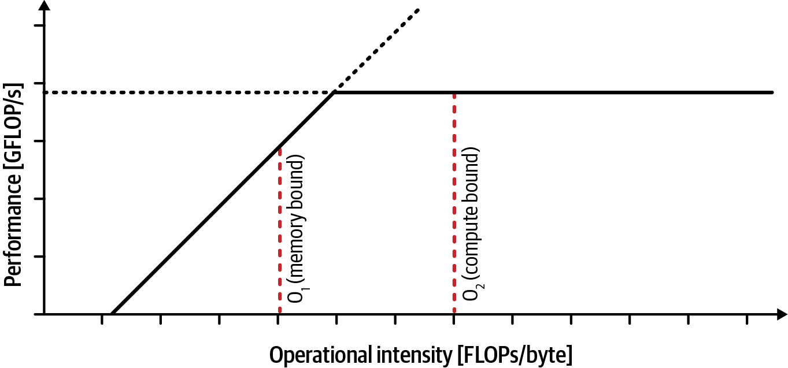
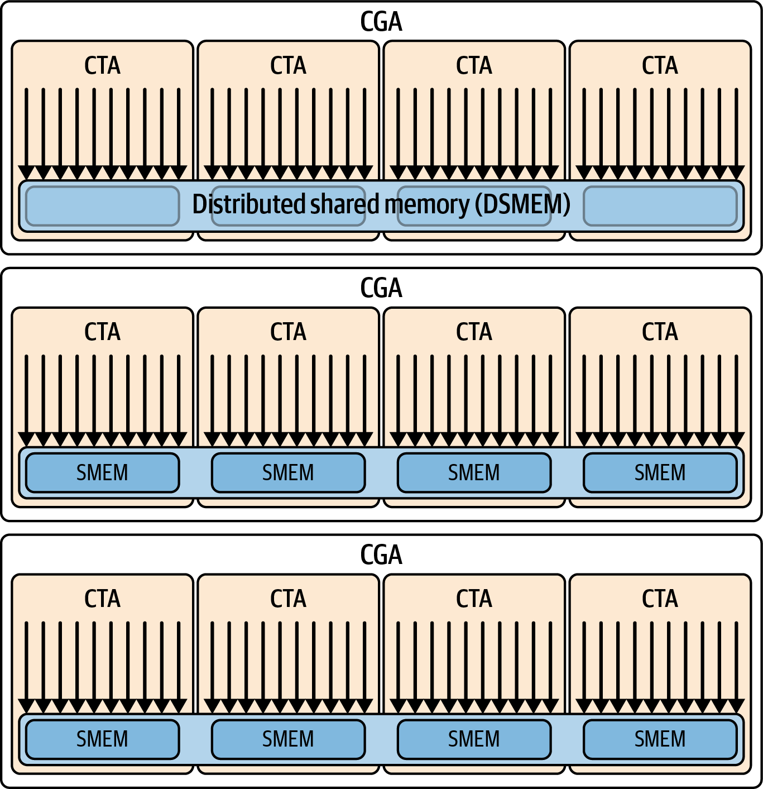
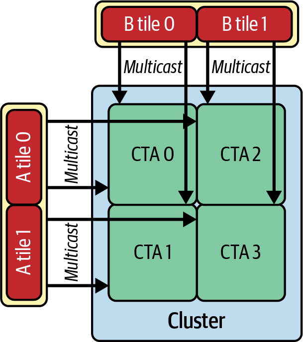
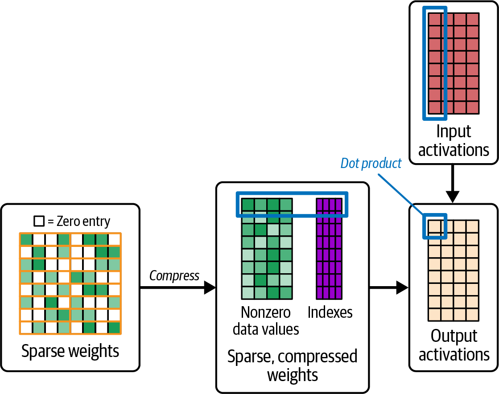
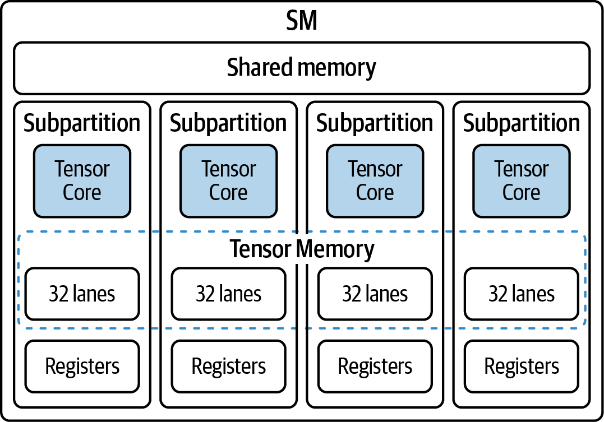
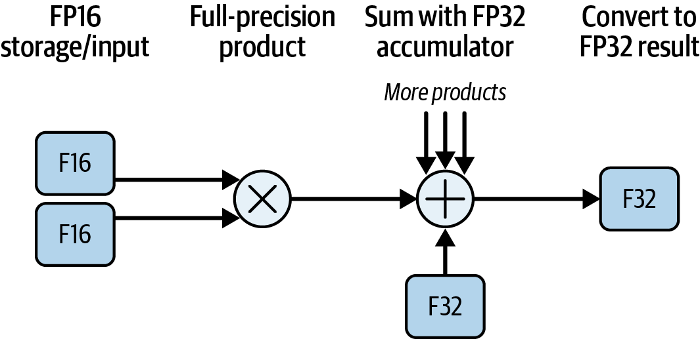
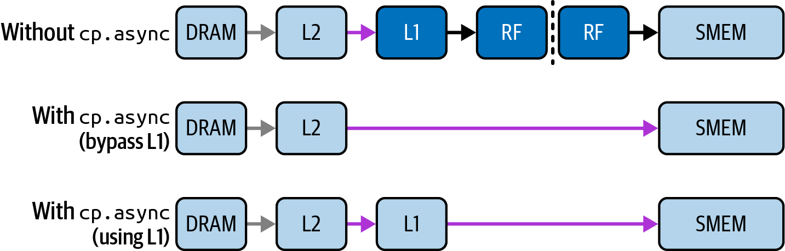

第 9 章 提高 CUDA 核函数效率和算术强度 (Increasing CUDA Kernel Efficiency and Arithmetic Intensity)¶
即便你已经通过大规模并行和高 ILP 完全隐藏了延迟，核函数的性能仍可能受限于它每次访存所完成的有用工作量。算术强度（arithmetic intensity），也称为运算强度（operational intensity），衡量的是从内存传输的每字节数据上执行了多少次浮点运算，即每字节 FLOPS。
Even if you fully hide latency with massive parallelism and high ILP, a kernel's performance may still be limited by how much useful work it does per memory access. Arithmetic intensity, also called operational intensity, measures how many floating-point operations are performed per byte of data transferred from memory, or FLOPS per byte.
新一代 GPU 的计算吞吐正在远远超越内存带宽的增长。这一日益扩大的差距意味着，提高算术强度比以往任何时候都更为关键。更高的算术强度表明核函数在每取回一个字节时完成了更多计算，而这正是充分发挥 GPU 计算能力的关键所在。
Newer GPU generations are advancing compute throughput well beyond memory bandwidth. This widening gap means that increasing arithmetic intensity is even more critical than ever. Higher arithmetic intensity indicates a kernel does more computation for each byte fetched, which is essential for fully utilizing the GPU's computational capabilities.
算术强度是 Roofline 性能模型（Roofline model）中的一项关键指标。Roofline 模型是一个实用的可视化工具，它以核函数性能（FLOPs/sec）对算术强度（FLOPs/byte）作图。它展示了内存带宽和计算吞吐的硬件上限（屋顶，roofs），使我们能够判断一个核函数是访存受限（memory bound，性能受限于内存传输）还是计算受限（compute bound，性能受限于 ALU 吞吐）。
Arithmetic intensity is a key metric in the Roofline performance model. The Roofline model is a useful visual tool that plots kernel performance (FLOPs/sec) against arithmetic intensity (FLOPs/byte). It shows hardware ceilings (roofs) for memory bandwidth and compute throughput, allowing us to see if a kernel is memory bound, performance limited by memory transfers, or compute bound, performance limited by ALU throughput.
在实践中，你可以使用 Nsight Compute 之类的工具生成 roofline 图，它包含一个 Roofline 分析视图。借助这些工具，你可以确认核函数最初是访存受限还是计算受限——然后在做优化的过程中持续剖析并验证改进效果。
In practice, you can generate roofline charts using tools like Nsight Compute, which includes a Roofline analysis view. Using these tools, you can verify if your kernel is initially memory bound or compute bound-then continue to profile and verify improvements as you make optimizations.
我们的目标是把核函数推向计算受限的区间，充分发挥 GPU 不断增长的计算能力。Roofline 性能模型能够恰当地指引你的优化朝这一目标推进。
The goal is to push the kernel toward the compute-bound regime and leverage the GPUs increasing computational power. A Roofline performance model can properly guide your optimizations toward that goal.
正如前一章所示，roofline 图用一条水平线表示硬件的峰值计算吞吐（屋顶，roof）——而从原点出发的一条对角线则表示受内存带宽限制的峰值可达吞吐。核函数的算术强度决定了它落在 x 轴上的位置，其性能则可与这些上限作对比，如图 9-1 所示。
As shown in a previous chapter, a roofline chart uses one horizontal line to represent the hardware's peak compute throughput (the roof)-and a diagonal line from the origin represents the peak achievable throughput limited by memory bandwidth. A kernel's arithmetic intensity determines where it falls on the x-axis, and its performance can be compared against these ceilings, as shown in Figure 9-1.

图9-1 示例屋顶线模型（GFLOP/s与算术强度FLOPs/byte）
Figure 9-1. Example Roofline model (GFLOP/s versus arithmetic intensity in FLOPs/byte)
一个算术强度低（即每移动一字节数据只做很少数学运算）的核函数会是访存受限的。此时，核函数的速度被硬件的内存带宽所限制，因为 GPU 大部分时间都在等待数据，而不是在做数值运算。
A kernel with low arithmetic intensity, or few math operations per byte of data moved, will be memory bound. In this case, the kernel's speed is capped by the hardware's memory bandwidth, because the GPU spends most of its time waiting for data rather than crunching numbers.
反之，一个算术强度很高（即每移动一字节做许多次 FLOPs）的核函数则会是计算受限的，因为它把 ALU 和 Tensor Core 用到了接近峰值的水平。此时，核函数的内存带宽占用便退居次要地位。
Conversely, a kernel with very high arithmetic intensity, or many FLOPs per byte moved, will be compute bound because it is utilizing ALUs and Tensor Cores near their peak capacity. In this case, the kernel's memory bandwidth usage is a secondary concern.
我们的目标始终是在可能的情况下提高算术强度，即在每传入/传出全局内存的一字节数据上完成更多的计算工作（每字节 FLOPs）。你可以借助多种技术来提高算术强度，例如用循环分块（loop tiling）来复用数据、用片上 L1/共享内存来实现复用，以及把多个核函数融合为一个，从而避免中间结果被写回全局内存。
The goal is always to increase arithmetic intensity where possible by doing more computational work for each byte of data transferred to and from global memory (FLOPs per byte). You can increase arithmetic intensity using techniques like loop tiling to reuse data, using on-chip L1/shared memory for reuse, and fusing multiple kernels into one so that intermediate results don't get written to global memory.
现代编译器框架，例如 PyTorch 的 TorchInductor，会自动完成其中的一部分优化，把计算保留在 GPU 上、减少片外内存流量并提高有效算术强度。然而作为开发者，你有时仍需手动组合这些技术，或编写自定义 CUDA 核函数，以确保数据在被逐出缓存之前得到最优复用等等。
Modern compiler frameworks such as PyTorch's TorchInductor automatically do some of these optimizations to keep computations on the GPU, reduce off-chip memory traffic, and increase effective arithmetic intensity. However, as a developer, you may still need to manually combine these techniques or write custom CUDA kernels to ensure that data is reused optimally before being evicted from caches, for instance.
你还可以使用更低精度的数据类型（FP16、FP8、FP4）来减少内存传输量——并利用 Tensor Core 来提高每秒 FLOPs。两者结合，将提高每字节 FLOPs 比率，从而提升算术强度。接下来，我们讨论其中的一些技术。
You can also use lower-precision data types (FP16, FP8, FP4) to reduce the amount of memory transfers-and utilize Tensor Cores to increase FLOPs per second. Together, these will increase the FLOPs per byte ratio and increase arithmetic intensity. Next, let's discuss some of these techniques.
请记住，并非每种工作负载都能轻松提高其算术强度。它受算法特性的约束。不过，你应当留意任何可以改进算法、复用数据、融合操作以及增大批大小的机会，从而在不改变算法结果（例如精度）的前提下提高算术强度。
Keep in mind that not every workload can easily increase its arithmetic intensity. It's constrained by algorithm characteristics. However, you should look for any opportunity to improve the algorithm, reuse data, fuse operations, and increase batch sizes to raise arithmetic intensity without changing the algorithm's result (e.g., accuracy).
9.1 多级微块化和软件预取 (Multilevel Microtiling and Software Prefetching)¶
正如第 7 章所讨论的，分块（tiling，又称 chunking 或 blocking）与数据复用是提高算术强度的有效手段。在那一章中，我们展示了把 A 和 B 的一个小子矩阵（tile）载入共享内存，如何让从全局内存取回的每一字节能够以静态随机存取存储器（static random-access memory，SRAM）的速度用于许多次乘加运算。
As discussed in Chapter 7, tiling (aka chunking or blocking) and data reuse are an effective way to raise arithmetic intensity. In that chapter, we showed how loading a small submatrix (tile) of A and B into shared memory lets each byte fetched from global memory be used for many multiply-accumulate operations at static random-access memory (SRAM) speed.
每当你重构代码，使每个元素只加载一次却被使用几十甚至几百次时（如分块的情形），你就把每字节 FLOPs 比率乘上了复用因子（reuse factor）。举例来说，在典型的矩阵乘中，A 和 B 的一个 32 × 32 的 tile 会为共享内存中的每个元素产生 1,024（1,024 = 32 × 32）次独立的乘法。这样一来，相比每次运算都直接从 DRAM 取回每个元素，算术强度便得到了提升。
Whenever you restructure code so that each element is loaded once and used tens or hundreds of times, like in the case of tiling, you multiply your FLOPs per byte ratio by the reuse factor. For instance, in a typical matrix multiply, a 32 x 32 tile of A and B produces 1,024 (1,024 = 32 x 32) independent multiplies for each element in shared memory. As such, the arithmetic intensity rises compared to fetching each element directly from DRAM for every operation.
除了简单的共享内存分块之外，你还可以用多级分块（multilevel tiling）进一步提高强度并暴露更多 ILP。使用多级分块时，在把一个 tile 暂存进共享内存后，让每个线程用 float4、
Beyond simple shared-memory tiling, you can further increase intensity and expose more ILP with multilevel tiling. With multilevel tiling, after staging a tile into shared memory, you have each thread load microtiles into registers using vectorized types such as float4 and
. This way, repeated operations happen entirely in registers. An example of multilevel tiling is shown in Figure 9-2.

图9-2 全局内存（DRAM）、共享内存（SMEM）和寄存器之间的多级分块
Figure 9-2. Multilevel tiling between global memory (DRAM), shared memory (SMEM), and registers
这种 SM 内部的复用（register → SMEM → DRAM）减小了每一层级的工作集——并最大限度地降低了片外流量。一如既往，务必在填充共享内存时合并（coalesce）全局读取，并对共享数据进行填充/交错（pad/swizzle）以避免内存 bank 冲突，正如我们在第 7 章所讲的那样。
This intra-SM reuse (register → SMEM → DRAM) reduces the working set at every level-and minimizes off-chip traffic. As always, be sure to coalesce global reads when filling shared memory and pad/swizzle shared data to avoid memory-bank conflicts, as we covered in Chapter 7.
在现代 GPU 上，这些内层循环的分块步骤往往通过使用 MMA 片段 API（fragment APIs）来覆盖完成。硬件使用 Tensor Core 指令在共享内存和 Tensor Memory（TMEM）之间隐式地搬运数据。TMEM 的使用由编译器和库来管理。在现代 GPU 上，tcgen05 指令在共享内存和 TMEM 之间隐式地暂存数据。它们使用一个独立的 TMEM 地址空间。不过在实现某些算法并需要显式控制时，开发者仍然可以用 cp.async 或 TMA 手动把 tile 搬入共享内存。
On modern GPUs, these inner-loop tiling steps are often covered by using MMA fragment APIs. The hardware moves data between shared memory and Tensor Memory (TMEM) implicitly using Tensor Core instructions. TMEM usage is managed by the compiler and libraries. On modern GPUs, tcgen05 instructions implicitly stage data between shared memory and TMEM. They use a distinct TMEM address space. However, developers can still manually move tiles into shared memory with cp.async or TMA when implementing certain algorithms and need explicit control.
一项与之密切相关的技术是软件预取（software prefetching），它常以双缓冲（double buffering）的形式实现。举例来说，与其等到当前 tile 的计算完成，你可以为下一个 tile 发起异步加载，把它读入共享内存。这会让 DRAM → 共享内存（SMEM）的传输与正在进行的算术运算相互重叠。精心设计的预取可以显著减少停顿时间并提升吞吐。其思想是让数据传输与计算相互重叠，从而使 ALU 永远不会因等待数据而空转。
A closely related technique is software prefetching, which is often implemented as double buffering. For instance, instead of waiting until the current tile's computations finish, you can issue asynchronous loads for the next tile into shared memory. This will overlap DRAM → shared-memory (SMEM) transfers with ongoing arithmetic. Careful prefetching can significantly reduce stall time and improve throughput. The idea is to overlap data transfer with computation so the ALUs never starve waiting for data.
当在 Grace Blackwell 这类 CPU-GPU 超级芯片（superchip）上使用统一内存（unified memory）时，你可以用 cudaMemPrefetchAsync() 来提示某个 tile 很快就会被用到。这会向运行时提示，让它通过 NVLink-C2C 迁移页面。不过预取只是一个提示，并非保证。你仍然需要确保正在重叠传输并适当地同步，以避免缺页（page fault）停顿。以这种方式让数据搬运与计算相互重叠，可确保每当需要新的 tile 时 ALU 都能持续获得数据供给。这进一步隐藏了内存延迟——并提升了实际达到的 FLOPS。
When using unified memory with a CPU-GPU superchip like Grace Blackwell, you can use cudaMemPrefetchAsync() to hint that a tile will be needed soon. This hints at the runtime to migrate pages over NVLink-C2C. However, prefetch is just a hint and not a guarantee. You still want to make sure you are overlapping transfers and synchronizing appropriately to avoid page fault stalls. Overlapping data movement with compute in this way ensures the ALUs remain fed whenever a new tile is needed. This further hides memory latency-and boosts achieved FLOPS.
统一内存简化了开发，但未必能带来最佳性能。资深用户往往更倾向于使用显式的 cudaMemcpy 或固定内存（pinned memory）分配，以彻底避免页迁移（page migration）开销。
Unified memory eases development but may not produce the best performance. Expert users often prefer explicit cudaMemcpy or pinned memory allocations to fully avoid page migration overheads.
简而言之，来自 DRAM 的每一字节在片上层级（寄存器或共享内存）被复用的次数越多，你的算术强度就越高。而更高的算术强度会把核函数推得更接近计算受限的区间。
In short, the more times that each byte from DRAM is reused at the on-chip levels (registers or shared memory), the higher your arithmetic intensity. And higher arithmetic intensity moves the kernel closer into the compute-bound regime.
9.2 使用线程块集群进行分块 (Tiling with Thread Block Clusters)¶
在现代 GPU 上，你可以借助来自协作组（Cooperative Groups）的 CUDA 线程块簇（thread block clusters，将在第 10 章讨论）来扩展分块复用的思路。它们允许多个线程块使用分布式共享内存（distributed shared memory，DSMEM）来共享数据，如图 9-3 所示。
On modern GPUs, you can extend the tiling-reuse idea using CUDA thread-block clusters from Cooperative Groups (discussed in Chapter 10). These allow multiple thread blocks to share data using distributed shared memory (DSMEM), as shown in Figure 9-3.

图9-3 CGA内的CTA（线程块）共享的DSMEM
Figure 9-3. DSMEM shared by CTAs (thread blocks) within a CGA
我们会在下一章详细介绍 CGA 与线程块簇，但这里值得先提一提，因为它们可以直接提高算术强度。举例来说，一个由四个线程块组成的簇可以利用 Tensor Memory Accelerator（TMA）的多播（multicast）特性协同加载一个 tile，如图 9-4 所示，该图用四个 CTA 来演示这一机制。
We cover CGAs and thread block clusters in detail in the next chapter, but they're worth mentioning here, as they can directly increase arithmetic intensity. For example, a cluster of four thread blocks can cooperatively load one tile using the Tensor Memory Accelerator (TMA) multicast feature, as shown in Figure 9-4, which uses four CTAs to demonstrate this mechanism.

图9-4 对于这四个（2x2）线程块集群，A和B的每个块使用多播同时加载到四个CTA（线程块）中（来源：https://oreil.ly/EEO_O）
Figure 9-4. For these four (2 x 2) thread block clusters, each tile of A and B is loaded into four CTAs (thread blocks) simultaneously using multicast (source: https://oreil.ly/EEO_O)
每个 tile 被划分到这四个线程块上，从而使该 tile 的全局内存流量在整个簇上被均摊。这些 tile 只取回一次，随后被全部四个线程块复用。
Each tile is partitioned across the four thread blocks so that global memory traffic for that tile is amortized over the cluster. The tiles are fetched only once and reused by all four thread blocks.
当四个 CTA 使用多播重用相同数据时，线程块集群可以在 2x2 集群中将全局内存流量减少多达 4 倍。此外，线程块集群通过降低分母或从全局内存移动的字节数来增加每个 GPU 的算术强度。这些的一种特殊形式称为线程块对，将在稍后在 Tensor Core 分块的上下文中讨论。
Thread block clusters can reduce global memory traffic by up to 4x in a 2 x 2 cluster when four CTAs reuse the same data using multicast. Also, thread block clusters increase arithmetic intensity per GPU by lowering the denominator, or number of bytes moved from global memory. A specialized form of these called thread block pairs will be discussed in a bit-in the context of tiling with Tensor Cores.
当你选择使用超出默认可移植上限（8 个 CTA）的不可移植簇尺寸时，Blackwell 支持最多 16 个线程块的线程块簇。要启用这一点，请在核函数上设置 cudaFuncAttributeNonPortableClusterSizeAllowed 属性。更大的簇可以提高复用，但可能降低占用率，因此在启用 16 之前请先做剖析。这可以支持更大的跨 SM tile，从而最大化数据复用（16×）并以相近的倍数提高算术强度。
Blackwell supports thread block clusters up to 16 thread blocks when you opt into a nonportable cluster size beyond the default portable limit of 8 CTAs. To enable this, set the cudaFuncAttributeNonPortableClusterSizeAllowed attribute on the kernel. Larger clusters can raise reuse but may reduce occupancy, so profile before enabling 16. This can support even larger multi-SM tiles, which maximizes data reuse (16x) and increases arithmetic intensity by a similar factor.
9.3 核函数融合 (Kernel Fusion)¶
提高算术强度的另一种方式是把多个操作——或多次循环迭代——融合为一次操作。通过把多个核函数融合在一起，从内存加载的数据在被写回之前可以用于多次计算和迭代。
Another way to increase arithmetic intensity is to fuse multiple operations-or loop iterations-into one operation. By fusing together multiple kernels, the data loaded from memory can be used for several computations and iterations before being written back.
与之类似，上一节讨论的循环展开（loop unrolling）允许单个线程在每个已加载的数据元素上执行更多计算，但代价是更多的寄存器占用。过度融合会增加每线程的寄存器压力并降低占用率，因此这里存在一个权衡。
Similarly, loop unrolling, discussed in the previous section, allows a single thread to perform more calculations on each loaded data element, but at the cost of more register usage. Too much fusion can increase per-thread register pressure and reduce occupancy, so there's a trade-off.
请务必剖析融合后的核函数。如果寄存器占用变得过高并开始溢出（spilling）到本地内存，融合带来的收益可能会被额外的内存流量所抵消。不过，如果你找到了恰当的平衡点，就能提高每移动一字节所做的 FLOPS，而当内存带宽是限制因素时这是有益的。
Always profile fused kernels. If register usage becomes excessive and starts spilling to local memory, the benefits of fusion might be offset by the additional memory traffic. If you find the right balance, however, you can improve the FLOPS per byte moved, and this is beneficial if memory bandwidth is a limiting factor.
现代深度学习框架可以通过其即时编译器（JIT）和图优化器自动完成融合与展开。举例来说，PyTorch 的 torch.compile，尤其是 TorchInductor，可以自动融合一连串的逐元素操作（elementwise operations）。我们会在第 13 章和第 14 章介绍 PyTorch 编译器。
Modern deep learning frameworks can automatically fuse and unroll through their just-in-time compilers and graph optimizers. For instance, PyTorch's torch.compile, and specifically TorchInductor, can automatically fuse sequences of elementwise operations. We cover the PyTorch compiler in Chapters 13 and 14.
逐元素操作（也称为点对点操作）对张量的每个元素独立应用简单计算。融合这些逐元素操作通过将中间值保持在片上来消除不必要的内存流量。这增加了从全局内存获取的每字节所做的工作量--提高了算术强度。
Elementwise operations, also called pointwise operations, apply a simple computation independently to each element of a tensor. Fusing these elementwise operations eliminates unnecessary memory traffic by keeping intermediate values on-chip. This increases the amount of work done per byte fetched from global memory-raising the arithmetic intensity.
例如，朴素实现会启动两个核函数。第一个核函数读取 x 并把 y 写入全局内存。第二个核函数读取 y 并写入 z：
For instance, the naive implementation launches two kernels. The first kernel reads x and writes y to global memory. The second reads y and writes z:
在这里，每个元素被触碰两次：一次在 sin(x) 之后，一次在 sqrt(y) 之后。因此，每个核函数的算术强度都非常低，因为它对每个元素——每次加载/存储操作——只执行一个昂贵的数学函数（一条多周期的 ALU 指令）。相比之下，融合核函数在单趟中完成同一组操作：
Here, each element is touched twice: once after sin(x) and once after sqrt(y). As such, each kernel's arithmetic intensity is very low, since it performs just one expensive math function (a multicycle ALU instruction) per element-per load/store operation. In contrast, the fused kernel performs this same set of operations in a single pass:
每个 x[i] 只加载一次，然后 sin 和 sqrt 都在寄存器中完成，只有最终的 z[i] 才写入内存。由于中间量 y 从不写出到全局内存，有效的每字节 FLOPS 大幅跃升，使该操作更接近计算屋顶（compute roof）。
Each x[i] is loaded once, then both sin and sqrt are applied in registers, and only the final z[i] is written to memory. Because the intermediate y never goes out to global memory, the effective FLOPS per byte jump sharply, moving the operation closer to the compute roof.
一条经验法则：如果数据会被同一个线程块内的线程读取超过一次，那么通常值得把数据暂存进共享内存，以消除冗余的全局加载。这有助于把你的核函数从访存受限区间提升到计算受限区间，从而更好地利用充裕的 GPU FLOPS。
As a rule of thumb, if data will be read more than once by threads in the same thread block, it's often worth staging the data into shared memory to eliminate redundant global loads. This will help lift your kernel out of the memory-bound regime and into the compute-bound regime to better utilize the ample GPU FLOPS.
融合减少了全局内存流量并提高了算术强度，因为现在每个元素在每次读写内存操作时都要经历两个数学运算。在我们的例子中，每个元素的 FLOPS 翻了一番（sin + sqrt），而由于没有中间写入，内存流量大约减半。这带来了显著更高的算术强度，即 FLOPS/byte。
Fusion reduces global memory traffic and increases arithmetic intensity since each element now undergoes two math operations for each read and write memory operation. In our example, we doubled the FLOPS per element (sin + sqrt) while roughly halving the memory traffic since there is no intermediate write. This produces a significantly higher arithmetic intensity, or FLOPS/byte.
为把这一点讲透，让我们用一个具体的例子来演示算术强度。假设我们想对一个 2D 张量 x（形状 [batch, hidden]）中每个长度为 hidden 的行做 L2 归一化。对每一行 b，计算单个范数 normb = sqrt(Σi x[b,i]*x[b,i] + ε)，然后对所有 i 写入 y[b,i] = x[b,i] / norm_b。
To drive this point home, let's demonstrate arithmetic intensity with a concrete example. Suppose we want to L2-normalize each length-hidden row of a 2D tensor x (shape [batch, hidden]). For each row b, compute a single norm, normb = sqrt(Σi x[b,i]*x[b,i] + ε), and then write y[b,i] = x[b,i] / norm_b for all i.
一个朴素实现会在一个核函数里做平方，在第二个核函数里把每一行归约为一个标量，再在第三个核函数里做除法。这将需要多次核函数启动，并向 HBM 写入中间结果。
A naive implementation would square in one kernel, reduce each row to a scalar in a second kernel, and divide in a third kernel. This would require multiple kernel launches with intermediate writes to HBM.
假设这 4 个核函数中的每一个都需要 1 次 FLOP 的计算。那么，这 4 个核函数各自的算术强度就是 1 FLOP 对 12 字节（2 次 float 读取、1 次 float 写入），即 0.083 FLOPS/byte。
Let's assume that each of the 4 kernels requires 1 FLOP of compute. As such, the arithmetic intensity of each of the 4 kernels is 1 FLOP per 12 bytes (2 float reads, 1 float write), or 0.083 FLOPS/byte.
作为替代，我们可以把这 4 个核函数融合成一个核函数，从而提高算术强度。手动融合的核函数代码如下所示：
Instead, we can fuse the 4 kernels into a single kernel and increase the arithmetic intensity. The manually fused kernel code is shown here:
__global__ void fusedL2Norm(const float* __restrict__ x,
float* __restrict__ y,
int hidden) {
extern __shared__ float sdata[]; // reduction buffer
const int batch = blockIdx.x; // one block per batch row
const int tid = threadIdx.x;
const float* batch_ptr = x + size_t(batch) * hidden;
// 1) Accumulate sum of squares into shared memory
float local = 0.f;
for (int i = tid; i < hidden; i += blockDim.x) {
float v = batch_ptr[i];
local = fmaf(v, v, local); // v*v + local
}
sdata[tid] = local;
__syncthreads();
// 2) Parallel reduction to sdata[0]
for (int offset = blockDim.x >> 1; offset > 0; offset >>= 1) {
if (tid < offset) sdata[tid] += sdata[tid + offset];
__syncthreads();
}
// 3) Normalize (guard tiny norms)
float norm = sqrtf(sdata[0]);
float inv = rsqrtf(sdata[0]); // prefer inverse
float* out_batch = y + size_t(batch) * hidden;
for (int i = tid; i < hidden; i += blockDim.x) {
// multiply by inverse (rsqrt) vs. divide by sqrt
out_batch[i] = batch_ptr[i] * inv;
}
}
在这个融合核函数中，每个线程会遍历它负责的那一段 x[b,*] 两次——一次用于累加局部的平方和，一次用于写出归一化后的输出——因此每个元素的全局流量约为 12 字节（两次读取 + 一次写入）。就每个元素而言，该核函数在归约阶段做约 1 次乘法 + 1 次加法，在归一化阶段做 1 次乘法。
In this fused kernel, each thread walks its slice of x[b,*] twice-once to accumulate a local sum of squares and once to write the normalized outputs-so global traffic is ~12 bytes per element (two reads + one write). Per element the kernel does ~1 multiply + 1 add during the reduction and 1 multiply during the normalize.
sqrt 和 rsqrt 的开销被均摊到整行之上。就 roofline 定位而言，一个保守的算术强度约为 ≈3 FLOPs / 12 bytes ≈ 0.25 FLOPs/byte（再加上来自每行 sqrt 的微小 1/(hidden * 12) 贡献）。这让我们能够通过给每个线程分配多个元素来提高 ILP，从而隐藏 sqrt 和 rsqrt 的延迟。
The sqrt and rsqrt are amortized over the whole row. For roofline placement, a conservative arithmetic intensity is ≈3 FLOPs / 12 bytes ≈ 0.25 FLOPs/byte (plus the tiny 1/(hidden * 12) contribution from the per-row sqrt). This lets us hide sqrt and rsqrt latency by giving each thread multiple elements to increase ILP.
此外，如上面的代码所示，我们计算逆平方根（rsqrtf）并做乘法，而不是做除法。这是一种常见的微优化——尤其适用于热点内层循环。其思路是用高吞吐的乘法指令流来替换缓慢的除法指令流。我们同时也把 sqrtf 换成了更廉价的 rsqrtf 近似。这些都属于微优化，因为总体上这条流水线是访存受限而非计算受限——但它仍值得指出。这里还有另一项未展示的优化。它的做法是在线程块内由单个线程做一次 rsqrtf/sqrtf，然后用共享内存把这个标量结果广播给其他线程。这对提升性能的影响更大。关于这项优化的更多细节，请参见本书的 GitHub 仓库。
Additionally, as shown in the previous code, we compute the inverse sqrt (rsqrtf) and multiply instead of dividing. This is a common micro-optimization-especially for hot inner loops. The idea is to replace a slow division instruction stream for a high-throughput multiply instruction stream. We are also trading a sqrtf with a cheaper rsqrtf approximation. These are micro-optimizations because overall, this pipeline is memory-bound and not compute-bound-but it's interesting to highlight. There is yet another optimization not shown here. It involves doing one rsqrtf/sqrtf in a single thread within the thread block and broadcasting the scalar result to the other threads using shared memory. This has more impact on improving performance. Please see the book's GitHub repo for more details on this optimization.
与向 HBM 写入中间结果的朴素三核函数流水线（平方 → 归约 → 除法）相比，融合版本至少省去了一次全局的写/读往返和一次启动屏障。因此，尽管其每元素的 FLOP/byte 仅约为 0.25，它在实践中的强度和运行时间都要好得多。这归功于延迟的节省和缓存局部性的改善。
Compared to a naive three-kernel pipeline (square → reduce → divide) with intermediate writes to HBM, the fused version removes at least one global write/read round trip and one launch barrier. As such, its intensity and runtime are much better in practice-even though the per-element FLOP/byte is only ~0.25. This is due to latency savings and cache locality improvements.
在实践中，通过把三个独立核函数合并为一个，这个单一的融合核函数由于更高的算术强度（FLOPS/byte）、更好的缓存局部性以及更低的启动开销，其执行速度比一系列独立核函数更快。
In practice, this single fused kernel executes faster than a series of separate kernels due to higher arithmetic intensity (FLOPS/byte), better cache locality, and reduced launch overhead by collapsing three separate kernels into one.
融合不仅提高了算术强度、把核函数更多地推向 roofline 的计算受限一侧，还节省了内存带宽。在朴素的多核函数版本中，我们不得不把中间结果写入全局内存，并在下一个核函数中把它们读回。而在融合版本中，中间结果（例如 ai*ai）从不需要离开线程的寄存器。
Fusing not only increases arithmetic intensity and pushes the kernel more toward the compute-bound side of the roofline, but it also saves memory bandwidth. In the naive, multikernel version, we have to write intermediate results to global memory and read them back in the next kernel. In the fused version, the intermediate results (e.g., ai*ai) never have to leave the thread's registers.
在这段代码示例中，加法可以直接使用那些寄存器来计算总和。随后 sqrt 可以使用这个总和——全程无需任何额外的全局内存流量。只有最终结果才被写回全局内存。
In the code example, the addition can use those registers directly to calculate the sum. The sqrt can then use the sum-all without requiring additional global memory traffic. Only the final result is written back to global memory.
因此，融合核函数或许能以 12 字节的往返全局内存的数据搬运达成 4 FLOPS，而朴素的未融合方式在计入中间内存搬运之后，则要以加载和存储 36 字节才达成 4 FLOPS。这意味着更少的 DRAM 流量和更低的延迟。
As such, the fused kernel achieves perhaps 4 FLOPS for 12 bytes of data movement from/to global memory, whereas the naive, unfused approach achieves 4 FLOPS for 36 bytes loaded and stored after accounting for the intermediate memory movement. This means less DRAM traffic and lower latency.
这个简单的例子展示了融合如何提高核函数的算术强度和整体性能。让我们再看另一种提高算术强度的方式——利用 GPU 的 Tensor Core 硬件单元。
This simple example shows how fusion increases our kernel's arithmetic intensity and overall performance. Let's look at another way to increase arithmetic intensity by utilizing our GPUs' Tensor Core hardware units.
最先进的 GPU 核函数通过纵向融合（vertical fusion）来获得更高的算术强度，它把作用于同一数据的顺序操作组合起来——同时还借助横向融合（horizontal fusion），它把跨数据的并行操作组合起来。像 NVIDIA 的 CUTLASS 或 OpenAI 的 Triton（已集成进 PyTorch 的编译器后端 TorchInductor）这样的库，可以帮助你利用 Tensor Core、TMEM、TMA 等非常高效地实现这些不同类型的融合核函数。
State-of-the-art GPU kernels achieve higher arithmetic intensity using vertical fusion, which combines sequential operations on the same data-as well as horizontal fusion, which combines parallel operations across data. Libraries like NVIDIA's CUTLASS or OpenAI's Triton (integrated into PyTorch's compiler backend, TorchInductor) can help you implement these different types of fused kernels very efficiently using Tensor Cores, TMEM, TMA, etc.
9.4 结构化稀疏 (Structured Sparsity)¶
在现代 GPU 上，2:4 结构化稀疏（structured sparsity）由 Sparse Tensor Cores 和 cuSPARSELt 在硬件中加速。2:4 意味着每连续四个权重中恰有两个非零。制造这种稀疏有时称为剪枝（pruning）。
On modern GPUs, 2:4 structured sparsity is accelerated in hardware by Sparse Tensor Cores and cuSPARSELt. 2:4 means that exactly two out of every four consecutive weights are nonzero. Creating this type of sparsity is sometimes called pruning.
通过把一半权重剪枝成 2:4 模式，现在每次内存加载所交付的、真正参与乘法的非零值就翻了一番。换句话说，你不再取回那些结果为零的权重。因此，你也不会在明知为零的东西上浪费一次矩阵乘操作，如图 9-5 所示。
By pruning half of the weights into a 2:4 pattern, each memory load now delivers twice as many nonzero values that actually participate in multiplication. In other words, you are no longer fetching weights that turn out to be zero. As such, you are not wasting a matrix multiply operation on something that you know is zero, as shown in Figure 9-5.

图9-5 2:4结构化稀疏
Figure 9-5. 2:4 structured sparsity
结构化稀疏是在模型训练完成之后应用的。模型被剪枝并针对推理做优化。剪枝与格式转换在 cuSPARSELt 之类的软件栈以及框架工具中完成。请注意，Transformer Engine 会加速受支持的稀疏执行，但在转换过程中并不强制稀疏。
Structured sparsity is applied after a model is trained. The model is pruned and optimized for inference. Pruning and format conversion are done in software stacks such as cuSPARSELt and framework tooling. Note that the Transformer Engine accelerates supported sparse executions but does not enforce sparsity during conversion.
剪枝与格式转换在软件中处理——通常通过 cuSPARSELt 和框架工具。在 PyTorch 中，使用 tosparsesemi_structured() 把训练好的稠密模块转换为 2:4 稀疏格式，然后在 Sparse Tensor Cores 上部署稀疏 GEMM。
Pruning and format conversion are handled in software-typically through cuSPARSELt and framework tooling. In PyTorch, use tosparsesemi_structured() to convert trained dense modules into 2:4 sparse format before deploying sparse GEMMs on Sparse Tensor Cores.
一旦你的模型完成转换，它就会调用运行在 Sparse Tensor Cores 上的优化稀疏 GEMM 核函数，而非标准核函数。对许多推理工作负载而言，Sparse Tensor Cores 相较其稠密版本可接近达到 2× 的加速——尤其在提交大批量输入时，因为这些批量能均摊核函数启动开销。
Once your model is converted, it will invoke optimized sparse GEMM kernels running on the Sparse Tensor Cores instead of standard kernels. Sparse Tensor Cores can approach up to a 2x speedup over their dense counterparts for many inference workloads-especially when submitting large batches of inputs, as these amortize kernel launch overhead.
批处理（batching）是一种非常常见且实用的提高算术强度的方式。与其一次处理一项（连带所有相关的内存 I/O 等等），你可以在一趟中处理多项，从而使内存访问（例如加载权重等）在多次计算上被均摊。
Batching is a very common and practical way to increase arithmetic intensity. Instead of processing one item at a time-with all of the associated memory I/O, etc.-you process multiple items in one pass so that memory access (e.g., loading weights, etc.) is amortized over multiple computations.
这为稀疏加速的矩阵乘提供了足够的并行工作量，以隐藏处理索引或压缩表示所带来的任何开销。在较小的批量中，这类开销可能占主导地位，并限制你所观察到的加速幅度。
This gives the sparse‐accelerated matrix multiplies enough parallel work to hide any overhead from handling indices or compressed representations. In smaller batches, this overhead can dominate and limit how much speedup you observe.
2:4 稀疏在使用大型矩阵乘时会产生最大收益，而大型矩阵乘在 LLM 这类基于 transformer 的模型中很常见。这是因为硬件能够充分利用专用的 Sparse Tensor Cores。这些 Sparse Tensor Cores 直接在硬件中对半宽数据进行运算。它跳过零值，并在相同的周期预算内对非零元素完成两倍的工作。
2:4 sparsity will produce maximum benefit when using large matrix multiplies, which are common in transformer-based models like LLMs. This is because the hardware can fully utilize the dedicated Sparse Tensor Cores. These Sparse Tensor Cores operate on half‐width data directly in hardware. This skips zeros and performs twice the work on the nonzero elements in the same cycle budget.
由于 Blackwell 上的计算能力增长得比 HBM 带宽更快，结构化稀疏是保持计算受限的绝佳方式。即便在一个 NVLink-C2C 让 GPU 能以极高吞吐从 CPU 内存流式取数的 Grace Blackwell 系统上，你仍然希望在每个已加载的 tile 上最大化每字节 FLOPS。
Because compute capacity on Blackwell has grown faster than HBM bandwidth, structured sparsity is a great way to stay compute bound. Even on a Grace Blackwell system in which NVLink-C2C lets the GPU stream data from CPU memory at very high throughput, you still want to maximize FLOPS per byte on every loaded tile.
例如，通过以 2:4 模式剪枝掉 50% 的权重，你就确保了一半的内存流量永远都不需要。这会立即减少全局内存读取，并使有效算术强度提高近 2×。
By pruning 50% of weights in a 2:4 pattern, for instance, you ensure that half of your memory traffic is never needed. This immediately reduces global‐memory reads and raises effective arithmetic intensity by almost 2x.
NVIDIA GPU 在硬件中实现这种 2:4 结构化稀疏，使每 16 个元素的块可以将 8 个元素置零。这正是用于把稀疏矩阵的 Tensor Core 吞吐翻倍的模式。在撰写本书时，没有其他任意稀疏模式能在硬件中获得这种特殊加速。
NVIDIA GPUs implement this 2:4 structured sparsity in hardware such that every 16-element chunk can zero out 8 elements. This is the pattern used to double Tensor Core throughput for sparse matrices. As of this writing, no other arbitrary sparsity pattern gains this special acceleration in hardware.
稀疏带来的加速以模型精度得到保持为前提。在实践中，剪枝之后进行微调（fine-tune）或仔细校准（calibrate）很重要。如此一来，你才能把精度损失降到最低。
The speedups from sparsity assume that the model's accuracy is maintained. In practice, it's important to fine-tune or carefully calibrate after pruning. This way, you can minimize accuracy loss.
在应用稀疏之前，重要的是先落实前面介绍过的那些基础优化：合并所有全局加载、用分块复用数据，以及融合逐点操作以消除多余的内存往返。一旦这些基础到位并经过验证，结构化稀疏就能为推理再提供一层加速。
Before applying sparsity, it is important to first implement the fundamental optimizations covered previously: coalesce all global loads, reuse data using tiling, and fuse pointwise operations to eliminate extra memory round trips. Once these basics are in place and verified, structured sparsity can provide another speedup for inference.
结构化稀疏通常适用于推理工作负载。在训练期间，梯度并不从 2:4 稀疏中获益。此外，在梯度更新中维持稀疏很复杂。因此，建议将其用于那些你已预先剪枝并校准过模型的部署场景。NVIDIA 的 2:4 稀疏 Tensor Core 特性主要用于推理。训练方面的支持有限，且依赖于模型和框架。在依赖它之前，请先在你的软件栈中验证支持情况。
Structured sparsity typically applies to inference workloads. During training, gradients do not benefit from 2:4 sparsity. In addition, maintaining sparsity in gradient updates is complex. As such, it's recommended to use it for deployment scenarios in which you've prepruned and calibrated the model. NVIDIA's 2:4 sparse Tensor Core feature is primarily used for inference. Training support is limited and model-dependent and framework-dependent. Verify support in your software stack before relying on it.
9.5 重计算与内存权衡 (Recomputation Versus Memory Trade-Off)¶
此外，与其存储或加载预先算好的值（例如 x²），当内存带宽是瓶颈时，不妨考虑按需重算它们。举例来说，在寄存器中反复计算 x*x 往往比从全局内存加载一个先前算好的 x² 更快。对廉价表达式的持续重算可以提高算术强度，并且在内存紧张时是一项有用的技术。
Also, instead of storing or loading precomputed values (e.g., x²), consider recomputing them on demand if memory bandwidth is the bottleneck. For instance, repeatedly computing x*x in registers is often faster than loading a previously computed x² from global memory. Continuous recomputation of cheap expressions can increase arithmetic intensity and is a useful technique whenever memory is scarce.
许多 LLM 推理引擎使用这项技术来节省内存。与其把大型激活张量（activation tensors）存进 HBM 稍后再读回，它们可以即时重算某些层和激活。这类似于模型训练语境中的激活检查点（activation checkpointing）。
Many LLM inference engines use this technique to save memory. Instead of storing large activation tensors in HBM and reading them back later, they can recompute certain layers and activations on the fly. This is similar to activation checkpointing in a model training context.
重算提高了有效的 FLOPS/byte，并能把大语言模型塞进更小的内存中。此外，重算为更大的批大小腾出了内存，并以少量额外的 FLOPS 换取内存流量的显著减少。
Recomputation improves effective FLOPS/byte and can fit large models into a smaller amount of memory. In addition, recomputation frees up memory for larger batch sizes and trades a few extra FLOPS for a significant decrease in memory traffic.
9.6 PyTorch 与算术强度 (PyTorch and Arithmetic Intensity)¶
在 PyTorch 中，这些思路的许多都会被自动应用。如前所述，PyTorch 编译器（将在第 13 章和第 14 章讨论）可以自动融合一连串逐元素操作——甚至一些归约。它利用执行图层面的优化来把数据保留在 GPU 上并尽可能地复用。
In PyTorch, many of these ideas are automatically applied. As mentioned, PyTorch compiler (discussed in Chapters 13 and 14) can automatically fuse chains of elementwise operations-and even some reductions. It uses execution-graph-level optimizations to keep data on the GPU and reuse it as much as possible.
由于它在底层使用 cuDNN、cuBLAS 这类优化过的库，当你用 torch.matmul 执行矩阵运算时，PyTorch 会替你完成分块并使用共享内存。此外，PyTorch 的 scaleddotproductattention (SPDA)（应为 SDPA）可能会根据张量的形状和 dtype 分派到 FlashAttention、memory-efficient 或 cuDNN 后端。要控制后端选择，可以使用例如 torch.nn.attention.sdpakernel(SDPBackend.FLASH_ATTENTION)。作为一名注重性能的开发者，你应当了解这些优化，以及如何验证它们何时被启用。
Because it uses optimized libraries like cuDNN and cuBLAS under the hood, PyTorch will perform tiling and use shared memory for you when performing matrix operations with torch.matmul. In addition, PyTorch's scaleddotproductattention (SPDA) may dispatch to FlashAttention, memory-efficient, or cuDNN backends depending on tensor shapes and dtypes. To control the backend selection, use torch.nn.attention.sdpakernel(SDPBackend.FLASH_ATTENTION), for instance. As a performance-minded developer, you should be aware of these optimizations and how to verify when they're being used.
需要指出的是，尽管 PyTorch 能够识别并编译大多数操作，某些非标准操作或自定义 CUDA 操作可能得不到融合。在这些情况下，仍可能需要手动优化，例如融合、分块等等。
It's important to note that while PyTorch can recognize and compile most operations, some nonstandard operations or custom CUDA operations might not get fused. In these cases, manual optimization may still be required, such as fusion, tiling, etc.
如果你在编写 PyTorch 代码，请优先使用融合操作以及执行多重计算的优化库调用，而非一长串单独的核函数启动。在实践中，这意味着使用 torch.nn.functional 激活或 torch.matmul 这样的高层操作，而不是在 Python 中编写许多细小的逐元素核函数。这些库会为这类高层操作调用高效的核函数。而编译器知道如何把它们与周围的操作高效地融合。
If you're writing PyTorch code, prefer fused operations and optimized library calls that perform multiple computations rather than long sequences of individual kernel launches. In practice, this means using high-level operations like torch.nn.functional activations or torch.matmul instead of writing many small elementwise kernels in Python. These libraries call efficient kernels for these types of high-level operations. And the compiler knows how to fuse them efficiently with surrounding operations.
PyTorch 的嵌套张量（nested tensors），或称不规则张量（ragged tensors），让你无需填充就能表示一批变长输入。每个嵌套张量把变长序列打包进单个高效的底层缓冲区。
PyTorch's nested tensors, or ragged tensors, let you represent batches of variable-length inputs without padding. Each nested tensor packs the variable-length sequences into a single, efficient underlying buffer.
NestedTensor 暴露正常的张量接口，但它消除了不必要的零填充。因此，全局内存加载变得更加高效，因为获取的每个字节在计算中都是有用的。
NestedTensor exposes the normal tensor interface, but it eliminates unnecessary zero-padding. As such, global-memory loads become more efficient because each byte that is fetched is useful in the computation.
嵌套张量对于序列长度各异的 LLM 很有用。使用嵌套张量时，注意力和批量矩阵乘之类的操作只会从内存中取回必要的数据。这在 Roofline 模型上把你的核函数推得更接近计算受限区间，并有助于减少访存受限造成的停顿。其结果是更高的持续吞吐——尤其在对内存敏感的工作负载上。
Nested tensors are useful for LLMs with varying-length sequences. When using nested tensors, operations like attention and batch-matrix multiplies will retrieve only the essential data from memory. This moves your kernel closer to the compute-bound regime on the Roofline model and helps to reduce memory-bound stalls. The result is higher sustained throughput-especially on memory-sensitive workloads.
在实践中，嵌套张量需要就算子覆盖度和性能特性做仔细验证。支持情况依工作负载而定，加速幅度依形状而定。你可以用有代表性的序列长度分布和注意力模式来验证端到端收益。请同时剖析内存流量和核函数时间。
In practice, nested tensors require careful validation for operator coverage and performance characteristics. Support is workload dependent, and speedups are shape dependent. You can verify end-to-end benefits with representative sequence length distributions and attention patterns. Profile both memory traffic and kernel time.
简而言之，PyTorch 暴露了多种机制来提高核函数的算术强度。重要的是理解这些选项，并判断哪种最适合你的工作负载。在现代 GPU 上提高算术强度的另一种有效方法是使用降精度的 Tensor Core。接下来我们就介绍这些机制。
In short, PyTorch exposes various mechanisms to increase your kernel's arithmetic intensity. It's important to understand these options and decide what works best for your workload. Another effective method to increase arithmetic intensity on modern GPUs is by using the reduced-precision Tensor Cores. Let's cover these mechanisms next.
9.7 混合精度和利用 Tensor Core (Mixed Precision and Utilizing Tensor Cores)¶
现代 NVIDIA GPU 在 Tensor Core 中实现了 TF32、FP16、FP8、FP4 和 INT8 等降精度计算。Blackwell 中的每个 SM 都有一块 256 KB 的片上 TMEM，专用于 Tensor Core 数据。它还有一个专门的 TMA 单元，用于在全局内存和共享内存之间异步拷贝 tile。随后 Tensor Core 指令（例如 tcgen05.mma）在共享内存和 TMEM 之间隐式地搬运操作数与累加器。这一设计以高吞吐向 Tensor Core 供给数据，并最大限度地减少停顿。相较于前几代直接在寄存器中累加的 GPU，Blackwell 基于 TMEM 的累加器有助于减轻寄存器压力。
Modern NVIDIA GPUs implement reduced‐precision computations like TF32, FP16, FP8, FP4, and INT8 in Tensor Cores. Each SM in Blackwell has a 256 KB on-chip TMEM dedicated to Tensor Core data. It also has a specialized TMA unit that asynchronously copies tiles between global memory and shared memory. Tensor Core instructions (e.g., tcgen05.mma) then move operands and accumulators between shared memory and TMEM implicitly. This design feeds the Tensor Cores at high throughput and minimizes stalls. Blackwell's TMEM-based accumulators help to reduce register pressure relative to previous GPU generations which accumulated directly in registers.
当正确使用时，这些功能可以通过将算术强度（每字节 FLOPS）提高 2 倍、4 倍甚至 8 倍，将曾经内存受限、张量密集的核函数转变为完全计算受限的核函数。你可以通过监控 Nsight Compute 中的屋顶线图和停顿统计来验证影响。Nsight Compute 的光速分析显示内存受限停顿原因，如"Memory Throttle"和缓存未命中。当使用低精度格式的 Tensor Core 时，这些将显著下降。Nsight Compute 集成了屋顶线图来交叉检查算术强度是否增加以将核函数推向计算屋顶。
When used correctly, these features can transform a once memory‐bound, tensor‐heavy kernel into a fully compute‐bound one by raising arithmetic intensity (FLOPS per byte) by 2x, 4x, or even 8x. You can verify the impact by monitoring the Roofline chart and Stall Stats in Nsight Compute. Nsight Compute's Speed of Light analysis shows memory-bound stall reasons such as "Memory Throttle" and cache misses. These will drop significantly when using Tensor Cores with lower precision formats. And Nsight Compute integrates a Roofline chart to cross-check if arithmetic intensity increased to push your kernel toward the compute roof.
当你从 FP32 转向 TF32、FP16、FP8 或 FP4 这类低精度的 Tensor Core 核函数时，Nsight Compute 的 warp 停顿指标（Warp Stall）通常会显示与内存相关的停顿减少，同时依赖类或流水线类停顿相对增加。这表明算术强度提高了，执行从访存受限转向了计算受限。
As you move from FP32 to lower-precision Tensor Core kernels such as TF32, FP16, FP8, or FP4, Nsight Compute's Warp Stall metrics typically show a reduction in memory-related stall as well as a relative increase in dependency or pipeline stalls. This indicates an increase in arithmetic intensity and a shift from memory-bound toward compute-bound execution.
9.7.1 使用 TMEM 和 TMA 为 Tensor Core 供给数据 (Feeding Tensor Cores with TMEM and TMA)¶
高吞吐张量计算的核心是 TMEM，即每个 SM 一块 256 KB 的 SRAM 缓冲区。不过在较高的层面上，程序员并不显式地分配或管理 TMEM。当你使用 Tensor Core 操作时，TMEM 由硬件或库来处理。TMEM 如图 9-6 所示。
At the heart of high‐throughput tensor computation is TMEM, a 256 KB SRAM buffer per SM. At a high level, programmers do not explicitly allocate or manage TMEM, however. TMEM is handled by the hardware or libraries when you use Tensor Core operations. TMEM is shown in Figure 9-6.

图9-6 TMEM通过累加部分结果支持Tensor Core（而不是寄存器）
Figure 9-6. TMEM supports the Tensor Cores by accumulating partial results (instead of registers)
在底层，Blackwell 使用 tcgen05.mma 指令，它以 TMEM 作为操作数和累加器的存储。CUTLASS 和库核函数通过核函数配置以及 Parallel Thread Execution（PTX）汇编来管理所需的分配与使用。因此，Transformer Engine 使用 TMEM 来存放部分结果。这减轻了 MMA 对寄存器的依赖。
Under the hood, Blackwell uses tcgen05.mma instructions that operate with TMEM for operand and accumulator storage. CUTLASS and library kernels manage the required allocation and usage through the kernel configuration and Parallel Thread Execution (PTX) assembly. As such, the Transformer Engine uses TMEM for partial results. This reduces the MMA dependencies on registers.
像 CUTLASS 这样的高层 API 会自动替你处理所有这些复杂性。在可能的情况下请使用 CUTLASS 及其他高层库，因为 CUTLASS 使用 tcgen05.* 这些 PTX 指令，它们实现了 Tensor Core 矩阵操作以及内存加载/存储接口。
High-level APIs like CUTLASS handle all of this complexity for you automatically. Use CUTLASS and other high-level libraries when possible as CUTLASS uses the tcgen05.* PTX instructions, which implement the Tensor Core matrix operations and memory load/store interfaces.
每当你使用 CUDA MMA 内建函数或 CUTLASS GEMM 启动 Tensor Core MMA 操作时，实现通过共享内存和 TMEM 管理操作数移动。TMA 在全局内存和共享内存之间流式传输块，Tensor Core 指令在共享内存和 TMEM 之间隐式移动操作数。
Whenever you launch a Tensor Core MMA operation using CUDA MMA intrinsics or a CUTLASS GEMM, the implementation manages operand movement through shared memory and TMEM. TMA streams tiles between global memory and shared memory, and Tensor Core instructions move operands between shared memory and TMEM implicitly.
Nsight Compute 内置了 roofline 与 speed-of-light 分析，用以确认你的核函数在采用低精度 Tensor Core 路径后是否已从访存受限转向计算受限。
Nsight Compute includes a built-in roofline and speed-of-light analysis to confirm whether your kernel shifted from memory bound to compute bound after adopting low-precision Tensor Core paths.
随后 Tensor Core 指令作为 MMA 流水线的一部分，在共享内存和 TMEM 之间搬运操作数。这一切都在幕后发生，无需显式的用户代码。如此一来，数据便被暂存到 Tensor Core 所需之处。要执行这次从全局内存到共享内存的数据传输，可以使用 TMA，或使用配合 CUDA Pipeline API（
Tensor Core instructions then move operands between shared memory and TMEM as part of the MMA pipeline. This happens behind the scenes and without explicit user code. This way, the data is staged where the Tensor Cores need it. To perform this data transfer from global memory into shared memory, use TMA or cuda::memcpyasync with a pipeline from the CUDA Pipeline API (
.) In code, implementing a simple two-stage pipeline with cuda::memcpy async and the CUDA Pipeline API looks like the following:
// two_stage_pipeline.cu
#include <cuda/pipeline>
#include <cooperative_groups.h>
namespace cg = cooperative_groups;
extern "C" __global__
void stage_ab_tiles(const float* __restrict__ globalA,
const float* __restrict__ globalB,
float* __restrict__ outC,
int tile_elems,
int num_tiles) {
// Alignment / size guards for vectorized copies (runtime parameter)
assert((tile_elems % (32 * 4)) == 0 &&
"tile_elems must be multiple of 128 for float4 vectorization");
// If you cannot guarantee 16B alignment or sizes, handle
// the tail/ragged edges with a fallback 4B loop.
extern __shared__ float smem[];
auto block = cg::this_thread_block();
// Shared buffers for double buffering of A and B
float* A0 = smem + 0 * tile_elems;
float* A1 = smem + 1 * tile_elems;
float* B0 = smem + 2 * tile_elems;
float* B1 = smem + 3 * tile_elems;
constexpr auto scope = cuda::thread_scope_block;
constexpr int stages = 2;
__shared__ cuda::pipeline_shared_state<scope, stages> pstate;
auto pipe = cuda::make_pipeline(block, &pstate);
// Prime the pipeline with tile 0
pipe.producer_acquire();
cuda::memcpy_async(block, A0, globalA + 0 * tile_elems,
cuda::aligned_size_t<32>{tile_elems * sizeof(float)}, pipe);
cuda::memcpy_async(block, B0, globalB + 0 * tile_elems,
cuda::aligned_size_t<32>{tile_elems * sizeof(float)}, pipe);
pipe.producer_commit();
for (int t = 1; t < num_tiles; ++t) {
// Stage the next A and B tiles
pipe.producer_acquire();
cuda::memcpy_async(block, (t & 1) ? A1 : A0,
globalA + t * tile_elems,
cuda::aligned_size_t<32>{tile_elems*sizeof(float)}, pipe);
cuda::memcpy_async(block, (t & 1) ? B1 : B0,
globalB + t * tile_elems,
cuda::aligned_size_t<32>{tile_elems*sizeof(float)}, pipe);
pipe.producer_commit();
// Consume the previously staged tiles
pipe.consumer_wait();
float* prevA = (t & 1) ? A0 : A1;
float* prevB = (t & 1) ? B0 : B1;
// Perform compute using prevA and prevB
pipe.consumer_release();
}
// Consume the final staged tiles
pipe.consumer_wait();
int last = (num_tiles - 1) & 1;
float* lastA = last ? A1 : A0;
float* lastB = last ? B1 : B0;
// Perform compute using lastA and lastB
pipe.consumer_release();
}
import torch
torch.set_float32_matmul_precision('high') # {'highest'|'high'|'medium'}
with torch.amp.autocast("cuda", dtype=torch.bfloat16):
output = model(input)
启动这个核函数时，将动态共享内存大小设置为 4 x tileelems x sizeof(float)，以便在共享内存中为 A0、A1、B0、B1 分配空间。这种双缓冲模式确保一旦某个分块驻留在共享内存中，Tensor Core 就能立即开始处理它。与此同时，cuda::memcpyasync 会并行地把下一个分块取入共享内存。由于 TMEM 为 Tensor Core 指令提供了片上数据缓冲区、而共享内存提供了暂存空间，你可以将 FP16、FP8 或 FP4 分块完全在片上暂存并复用。其结果是：当流水线调优得当、分块与拷贝的规模设置合适时，停顿更少。cuda::memcpy_async 能让从 HBM 到共享内存的传输与计算重叠，使核函数保持忙碌。这有助于把访存延迟隐藏在计算之后。
When launching this kernel, set the dynamic shared memory size to 4 x tileelems x sizeof(float) to allocate A0, A1, B0, and B1 in shared memory. This double buffering pattern ensures that as soon as one tile is resident in shared memory, Tensor Cores can begin processing it. Meanwhile cuda::memcpyasync fetches the next tile into shared memory in parallel. Because TMEM provides an on-chip data buffer for Tensor Core instructions and shared memory provides the staging space, you can stage and reuse FP16, FP8, or FP4 tiles entirely on chip. The result is fewer stalls when the pipeline is tuned and the tiles and copies are sized appropriately. cuda::memcpy_async can overlap transfers from HBM to shared memory and keep the kernel busy. This helps hide memory latency behind computation.
9.7.2 TF32 和自动混合精度（PyTorch）(TF32 and Automatic Mixed Precision (PyTorch))¶
Tensor Core 最初是为 FP16 设计的，但它们也支持 TF32——一种介于 FP32 与 FP16 之间的格式。TF32 采用与 FP32 相同的 8 位指数位（exponent），以及与 FP16 相同的 10 位尾数位（mantissa）。TF32 在 Tensor Core 上的吞吐远高于 FP32 在 CUDA core 上的吞吐，同时保留了 FP32 的指数范围。在 PyTorch 中，启用 TF32 只需在代码里设置如下内容：
While Tensor Cores were originally designed for FP16, they also support TF32, which sits between FP32 and FP16. TF32 uses an 8-bit exponent like FP32 and a 10-bit mantissa like FP16. TF32 executes on Tensor Cores at substantially higher throughput than FP32 on CUDA cores while preserving FP32's exponent range. In PyTorch, enabling TF32 is as simple as setting the following in your PyTorch code:
一旦设置了这些标志，torch.matmul 和 torch.nn.Linear 等高层操作就会自动以 TF32 Tensor Core 核函数执行，而不再以 FP32 在标准 CUDA core 上执行。
Once these flags are set, high‐level operations such as torch.matmul and torch.nn.Linear automatically execute as TF32 Tensor Core kernels rather than in FP32 on standard CUDA cores.
除 TF32 外，PyTorch 的自动混合精度（automatic mixed precision，AMP）还能为每个操作选择最优精度（FP16 或 BF16），并将结果以 FP32 累加以保证稳定性。BF16 有助于规避 FP16 的上溢（overflow）问题。默认情况下，CUDA autocast 使用 float-16。只需传入 dtype=torch.bfloat16，即可在支持的 GPU 上选用 BF16。例如，你可以用上下文管理器包裹模型代码，如下所示：
Beyond TF32, PyTorch's automatic mixed precision (AMP) can choose the optimal precision (FP16 or BF16) for each operation and accumulate the results in FP32 for stability. BF16 helps avoid FP16's overflow issues. By default, CUDA autocast uses float-16. Simply pass dtype=torch.bfloat16 to opt into BF16 on GPUs that support it. For instance, you can wrap your model code in a context manager, as shown here:
在底层，TorchInductor（见第 13、14 章）会自动融合这些精度转换，以确保：大型 GEMM 操作在 Tensor Core 上以 FP16 或 TF32 运行、累加保持在 FP32 以获得数值稳定性、诸如层归一化（layer normalization）和 softmax 之类的小型"敏感"核函数以 FP32 运行，以及 GradScaler 在使用 FP16 训练时防止下溢（underflow）。注意，BF16 拥有 FP32 的指数范围。因此，用 BF16 训练时通常不需要 GradScaler。
Under the hood, TorchInductor (covered in Chapters 13 and 14) fuses these precision conversions automatically to ensure the following: large GEMM operations run on Tensor Cores in FP16 or TF32, accumulation remains in FP32 for numeric stability, small "sensitive" kernels like layer normalization and softmax run in FP32, and GradScaler prevents underflow during training with FP16. Note that BF16 has FP32 exponent range. As such, GradScaler typically isn't needed when training with BF16.
在 PyTorch 中，这些混合精度决策已集成进编译器，因此你无需手动干预即可获得最优的 dtype 选择（例如计算用 FP16/FP8、累加用 FP32）。这一点在图 9-7 中以混合精度矩阵乘加（matrix multiply-accumulate，MMA）的形式展示。
In PyTorch, these mixed-precision decisions are integrated into the compiler so you get optimal dtype selection (e.g., FP16/FP8 for compute, FP32 for accumulations) without requiring manual intervention. This is shown in Figure 9-7 as a mixed-precision matrix multiply-accumulate (MMA).

图9-7 混合精度和矩阵乘累加（MMA）
Figure 9-7. Mixed-precision and matrix multiply-accumulate (MMA)
这条自动混合精度流水线以最小的代码改动最大化了算术强度。融合后的 Tensor Core 核函数通过在共享内存（如操作数）和 TMEM（如累加器）中暂存并复用数据，尽量减少往返 HBM 的次数。
This automatic mixed-precision pipeline maximizes arithmetic intensity with minimal code changes. The fused Tensor Core kernels minimize round trips to HBM by staging and reusing data in shared memory (e.g., operands) and TMEM (e.g., accumulators).
在使用前文所述的结构化稀疏、或极低精度（FP8/FP4）时，务必保持足够大的批大小或分块粒度，让 TMEM 和 Tensor Core 保持满负荷。小批次会带来开销，包括格式转换、稀疏索引处理、不规则内存访问模式等。这会削弱实际获得的加速。
When using structured sparsity, described earlier, or extreme low-precision (FP8/FP4), be sure to maintain a large enough batch size or tile granularity so that TMEM and Tensor Cores remain fully utilized. Small batches incur overhead, including format conversions, sparse index handling, irregular memory patterns, etc. This can reduce achieved speedups.
例如，使用 FP8 或 2:4 稀疏时，批大小为 1 可能几乎看不到收益，因为固定开销没有被摊薄。相比之下，批大小为 128 或 256 会充分利用 TMEM 流水线，产生接近峰值的吞吐。
For example, when using FP8 or 2:4 sparsity, a batch size of 1 may see little benefit because the fixed overhead isn't amortized. In contrast, a batch size of 128 or 256 will fully utilize the TMEM pipeline and produce near-peak throughput.
9.7.3 BF16/FP16、FP8 和 FP4 降低精度 (BF16/FP16, FP8, and FP4 Reduced Precision)¶
BF16/FP16（半精度，half-precision）已在多代 GPU 上得到支持，而现代 GPU 上的 Tensor Core 往往能维持超过 90% 的 BF16/FP16 峰值吞吐，约为 FP32 峰值吞吐的 4×。这是因为硬件在每个周期都并行发射大量 BF16/FP16 FMA 运算。
BF16/FP16 (half-precision) has been supported for many GPU generations, but Tensor Cores on modern GPUs can often sustain greater than 90% of the BF16/FP16 peak throughput, around 4x the FP32 peak throughput. This is because at each cycle, the hardware issues many BF16/FP16 FMA operations in parallel.
FP16 训练使用比 FP32 更窄的 5 位指数位，因此除非施加损失缩放（loss scaling），否则极小的梯度值会下溢到零。损失缩放在反向传播（backpropagation）期间维持数值稳定性。这种缩放可以是静态的，也可以是动态的。
FP16 training uses a narrower 5-bit exponent than FP32, so very small gradient values can underflow to zero unless you apply loss scaling. Loss scaling preserves numerical stability during backpropagation. This scaling can either be static or dynamic.
相比之下，BF16 与 FP32 的 8 位指数范围一致，天生就能避免下溢。因此它极少（如果有的话）需要损失缩放。这简化了混合精度工作流，并且在现代 GPU 上往往能提升训练精度。
In contrast, BF16 matches FP32's 8-bit exponent range and natively avoids underflow. There, it rarely (if ever) requires loss scaling. This simplifies mixed-precision workflows and often improves training accuracy on modern GPUs.
在现代 GPU 上，训练通常首选 BF16，因为它能维持与 FP32 相当的精度，又不必承受 FP16 所要求的损失缩放的复杂性。
BF16 is typically preferred for training on modern GPUs as it can maintain accuracy comparable to FP32 without the complexity of loss scaling that FP16 demands.
要把吞吐推得更高，可以使用 FP8。把 16 位权重减少 50% 降到 8 位后，你将内存流量减半——并使每次 HBM 事务加载的权重数量翻倍。实践中，采用 FP32 或 TF32 累加的 FP8 矩阵乘可达到 BF16/FP16 TFLOPS 的 2–3×——前提是模型因量化误差（quantization errors）造成的轻微精度损失仍在可接受范围内。
To push throughput even higher, you can use FP8. By reducing 16‐bit weights by 50% down to 8 bits, you cut memory traffic in half-and double the number of weights loaded per HBM transaction. In practice, FP8 matmuls with FP32 or TF32 accumulation achieve 2-3x the BF16/FP16 TFLOPS-assuming that the model's slight loss in accuracy due to quantization errors remains acceptable.
为应对极低精度下的精度问题，Transformer Engine 既支持 FP8，也支持 NVIDIA 带微缩放（micro-scaling）的 4 位 NVFP4 格式。NVFP4 采用两级缩放，将按微块缩放（per-microblock scaling）与一个更高层级的缩放相结合，使模型在用 4 位存储权重的同时仍能保持精度。此外，Blackwell B200 的 NVFP4 采用激进的微缩放量化，提供 10 petaFLOPS（稠密），而 FP32 峰值约为 80 teraFLOPS（稠密）。这意味着每权重的理论吞吐提升约两个数量级。而 Blackwell 的 B300（Ultra）以 15 petaFLOPS（稠密）的 NVFP4 算力，比 B200 高出 50%。
To address accuracy concerns at very low precision, the Transformer Engine supports FP8 as well as NVIDIA's 4-bit NVFP4 format with micro-scaling. NVFP4 applies two-level scaling, combining per-microblock scaling and a higher-level scale so that models can retain accuracy while using 4-bit storage for weights. In addition, Blackwell B200's NVFP4's aggressive microscaling quantization provides 10 petaFLOPS (dense), while FP32 peak is about 80 teraFLOPS (dense). This is a speedup of approximately two orders of magnitude higher theoretical throughput per weight. And Blackwell's B300 (Ultra) boasts 50% higher NVFP4 compute capacity than B200 at 15 petaFLOPS (dense).
如果你的模型在校准（calibrate）后能容忍精度下降，那么在受支持的硬件上，NVFP4 核函数可以提供远高于 FP32 的吞吐，但精度必须针对每个模型逐一验证。
If your model tolerates the precision drop after calibration, NVFP4 kernels can deliver substantially higher throughput than FP32 on supported hardware, but accuracy must be validated per model.
由于精度如此之低，每个 SM 的 256 KB TMEM 可以容纳大型 FP4 块（例如 256 x 256），这进一步增加了片上重用并提高了性能。请注意，所有低精度→累加转换自动发生。核函数从 HBM 读取 FP4 输入，Tensor Core 执行 FP4 x FP4 乘法，MMA API 将结果累加到 BF16/FP16 或 FP32 累加器中。
And since the precision is so low, the 256 KB TMEM per SM can hold large FP4 tiles (e.g., 256 x 256), which further increases on-chip reuse and improves performance. Note that all low-precision → accumulation conversions happen automatically. The kernel reads FP4 inputs from HBM, the Tensor Cores perform FP4 x FP4 multiplies, and the MMA API accumulates the results into BF16/FP16 or FP32 accumulators.
每降低一档精度，每字节的运算数就翻倍或翻四倍，因而提升了算术强度。当 TMEM/TMA 让访存与计算重叠时，这些低精度格式会把原本访存受限的核函数变成完全计算受限的核函数。这充分发挥了现代 GPU 中每 GPU 数 PFLOPS 的 Tensor Core 引擎。
Each drop in precision doubles or quadruples the number of operations per byte and therefore increases arithmetic intensity. When TMEM/TMA overlap memory and compute, these low-precision formats turn formerly memory-bound kernels into entirely compute-bound ones. This fully utilizes the multi-PFLOPS-per-GPU Tensor Core engines in modern GPUs.
9.7.4 INT8 降低精度和用于推理的 DP4A 指令 (INT8 Reduced Precision and DP4A Instructions for Inference)¶
LLM 推理场景通常能容忍现代 GPU 所支持的低精度 INT8 量化（quantization）——在常规 CUDA core 上使用 DP4A（SIMD 点积指令）、在 Tensor Core 上使用整数矩阵乘加（MMA）指令。在指令层面，DP4A 每条指令执行四次 INT8 乘加（MAC）运算，而每条 FP32 融合乘加（FMA）指令只做一次。
LLM inference use cases can typically tolerate reduced-precision INT8 quantization supported by modern GPUs using DP4A (SIMD dot-product) instructions on regular CUDA cores and integer matrix-multiply/accumulate (MMA) instructions on Tensor Cores. At the instruction level, DP4A performs four INT8 multiply-accumulate (MAC) operations per instruction compared to one FP32 fused multiply-add (FMA) per instruction.
由于 INT8 的权重流量为每元素一字节，而非 FP32 的四字节，权重的内存流量下降了 75%。凭借更高的 INT8 Tensor Core 峰值吞吐和更低的内存流量，INT8 推理工作负载可以显著超越 FP32。这是因为使用 INT8 权重时，每个 GPU 每秒能从内存处理约 4× 的数据。这得益于 TMEM 与 TMA 让数据和计算完美重叠——并尽可能高效地喂给 Tensor Core。
Because weight traffic for INT8 is only one byte per element instead of four bytes for FP32, memory traffic for weights drops by 75%. INT8 inference workloads can significantly outperform FP32 due to higher peak INT8 Tensor Core throughput and reduced memory traffic. This is because each GPU can process approximately 4x more data per second from memory when using INT8 weights. This is made possible by TMEM and TMA keeping data and compute perfectly overlapped-and feeding the Tensor Cores as efficiently as possible.
9.7.5 Transformer Engine 和 TMEM 深入探讨 (Transformer Engine and TMEM in Depth)¶
现代 NVIDIA GPU 内置了 Transformer Engine，它把面向低精度格式的 Tensor Core 硬件支持与用于缩放和转换的软件运行时结合在一起。cuBLASLt、cuDNN、CUTLASS 或 OpenAI Triton 中的核函数会执行 cp.async 指令或 TMA 传输，把数据搬入共享内存。随后，Tensor Core 指令会隐式地在共享内存与 TMEM 之间搬移操作数。
Modern NVIDIA GPUs include a Transformer Engine that combines Tensor Core hardware support for low-precision formats with a software runtime for scaling and casting. Kernels in cuBLASLt, cuDNN, CUTLASS, or OpenAI's Triton perform cp.async instructions or TMA transfers into shared memory. The Tensor Core instructions then move operands between shared memory and TMEM implicitly.
请记住，TMEM 是每个 SM 256 KB 的 SRAM 缓冲区，Transformer Engine 和 Tensor Core 用它来存储结果（而非用寄存器）。实践中，你从不显式分配 TMEM。这一切都由硬件处理。例如，调用 Tensor Core 的 MMA 操作时，硬件会处理所有的内存分配与数据传输。
Remember that TMEM is the 256 KB per-SM SRAM buffer that the Transformer Engine and Tensor Cores use to store results (instead of registers). In practice, you never explicitly allocate TMEM. It's all handled by the hardware. For instance, when invoking Tensor Core's MMA operations, the hardware handles all of the memory allocations and data transfers.
借助 MMA 指令，每个 warp 都直接驱动 Tensor Core 执行高吞吐的混合精度 MMA 操作。这些操作管理片段加载（fragment loads）、寄存器映射以及混合精度 MMA 运算。
With the MMA instructions, each warp directly drives the Tensor Cores to perform high‐throughput mixed‐precision MMA operations. These operations manage fragment loads, register mappings, and mixed-precision MMA operations.
截至本文写作时，PyTorch 的 INT8 量化支持通过 TorchAO 和各厂商后端提供。量化模块使用专用的 INT8 核函数运行。使用 cuBLASLt 或 CUTLASS 进行底层 INT8 GEMM 可以确保 Tensor Core 的利用率。
As of this writing, PyTorch's INT8 quantization support is provided through TorchAO and vendor backends. Quantized modules run using dedicated INT8 kernels. Using cuBLASLt or CUTLASS for low-level INT8 GEMM can ensure Tensor Core utilization.
每当你启动基于 Tensor Core 的核函数或一个 GEMM 库函数（如 CUTLASS），其实现都会自动通过共享内存和 TMEM 管理操作数搬移。这让 Tensor Core 始终装满待处理的分块。（注意，应用代码不会直接分配 TMEM。）
Any time you launch a Tensor-Core-based kernel or a GEMM library function (e.g., CUTLASS), the implementation manages operand movement through shared memory and TMEM automatically. This keeps the Tensor Cores full of tiles that are ready to be processed. (Note that the application code does not allocate TMEM directly.)
Transformer Engine 的工作流很直接。首先，你的核函数发出一个 MMA 调用或启动一个 CUTLASS GEMM。接着，Transformer Engine 的固件安排 TMA（或 cuda::memcpy_async）把权重和激活从 HBM 拷贝进共享内存（SMEM）。随后，Tensor Core 指令（如 tcgen05.mma）在 MMA 流水线期间隐式地在 SMEM 与 TMEM 之间搬移操作数。理想情况下，权重是 FP8 或 FP4，激活在可能时被转换为 FP8/FP4——否则，激活可以保留为 FP16/FP32 格式。
The Transformer Engine workflow is straightforward. First, your kernel issues a MMA call or launches a CUTLASS GEMM. Next, the Transformer Engine's firmware arranges for TMA (or cuda::memcpy_async) to copy weights and activations from HBM into shared memory (SMEM). Tensor Core instructions (e.g., tcgen05.mma) then move operands between SMEM and TMEM implicitly during the MMA pipeline. Ideally, the weights are in FP8 or FP4, and the activations are cast to FP8/FP4 when possible-otherwise, the activations can be left in FP16/FP32 format.
Tensor Core MMA 操作以低精度执行，例如 FP8 x FP8 带有更高精度累加，或 FP16 x FP16 带有 FP32 累加。部分和以更高精度（例如 BF16、FP16、FP32）累加在 TMEM 中，具体取决于核函数。累加器状态驻留在 TMEM 中。此状态使用 tcgen05 加载和存储接口访问。硬件透明地管理这些移动。
Tensor Core MMA operations execute at low precision, such as FP8 x FP8 with higher-precision accumulation or FP16 x FP16 with FP32 accumulation. Partial sums accumulate in TMEM with higher precision (e.g., BF16, FP16, FP32) and are kernel dependent. The accumulator state resides in TMEM. This state is accessed using tcgen05 load and store interfaces. The hardware manages these moves transparently.
如果你构建自定义的分块循环，就可以让数据搬移与 Tensor Core 计算重叠。你可以使用 cuda::memcpy_async 和 CUDA Pipeline API 来做到这一点，如下面的代码所示：
If you build a custom tile loop, you can overlap data movement with Tensor Core compute. You can do this using cuda::memcpy_async and the CUDA Pipeline API, as shown in the code here:
#include <cuda/pipeline>
#include <cooperative_groups.h>
namespace cg = cooperative_groups;
extern "C" __global__
void double_buffer_a(const float* __restrict__ globalA,
int tile_elems,
int numTiles) {
__shared__ float tileA0[TILE][TILE];
__shared__ float tileA1[TILE][TILE];
auto block = cg::this_thread_block();
constexpr auto scope = cuda::thread_scope_block;
constexpr int stages = 2;
__shared__ cuda::pipeline_shared_state<scope, stages> pstate;
auto pipe = cuda::make_pipeline(block, &pstate);
// Prime pipeline with tile 0
pipe.producer_acquire();
cuda::memcpy_async(block,
&tileA0[0][0],
globalA + 0 * tile_elems,
cuda::aligned_size_t<32>{tile_elems * sizeof(float)}
pipe);
pipe.producer_commit();
for (int t = 1; t < numTiles; ++t) {
// Stage next tile into the alternate buffer
pipe.producer_acquire();
float* nxtA = (t & 1) ? &tileA1[0][0] : &tileA0[0][0];
cuda::memcpy_async(block,
nxtA,
globalA + t * tile_elems,
cuda::aligned_size_t<32>{tile_elems * sizeof(float)}
pipe);
pipe.producer_commit();
// Consume the previously staged tile
pipe.consumer_wait();
float* curA = ((t - 1) & 1) ? &tileA1[0][0] : &tileA0[0][0];
pipe.consumer_release();
}
// Consume the final staged tile
pipe.consumer_wait();
float* lastA = ((numTiles - 1) & 1) ? &tileA1[0][0] : &tileA0[0][0];
// Use lastA with your compute
pipe.consumer_release();
}
由于 TMEM 是 Tensor Core 指令专用的片上缓冲区，数据得以贴近计算单元。当 Tensor Core 处理当前分块时，cuda::memcpy_async 会把下一个分块从 HBM 流式送入共享内存。
Because TMEM is a dedicated on-chip buffer used by Tensor Core instructions, data is kept close to the compute units. While Tensor Cores process the current tile, cuda::memcpy_async streams the next tile from HBM into shared memory.
这种重叠有助于隐藏访存延迟，并能在流水线调优得当时让 Tensor Core 保持忙碌。Transformer Engine、TMEM 和 TMA 之间的这种协作可以大幅提升算术强度，并在优化良好的情况下逼近 speed-of-light 效率。
This overlap helps hide memory latency and can keep Tensor Cores busy when the pipeline is tuned. This collaboration between the Transformer Engine, TMEM, and TMA can substantially raise arithmetic intensity and approach speed-of-light efficiency in optimized cases.
尽管加载和存储操作相对于调用它的 warp 是同步的，但计算与数据搬移的重叠应当来自 CUDA Pipeline API。与 wait/release 等流水线原语搭配使用时，cuda::memcpy_async 会映射到 Tensor Memory Accelerator（TMA），对于大批量张量传输应始终优先使用它。cp.async 仅保留给 TMA 无法表达的小众场景。不过，这类场景很少见。你还应确保在使用数据之前拷贝已经完成。
While load and store operations are synchronous with respect to the calling warp, the overlap of compute and data movement should come from the CUDA Pipeline API. Used with pipeline primitives like wait/release, cuda::memcpy_async maps to the Tensor Memory Accelerator (TMA) and should always be preferred for bulk tensor transfers. Reserve cp.async for niche cases that TMA cannot express. However, these are rare. You should also make sure that copies complete before using the data.
9.8 使用 CUTLASS 实现最佳算术强度和 Tensor Core 性能 (Using CUTLASS for Optimal Arithmetic Intensity and Tensor Core Performance)¶
自行利用这些优化最简单的途径之一，就是使用 NVIDIA 的 CUTLASS 库。有了 CUTLASS，你只需写一个模板化调用，它就会自动应用许多高级优化。
One of the easiest ways to leverage these optimizations yourself is to use NVIDIA's CUTLASS library. With CUTLASS, you write a single templated call, and it will automatically apply many advanced optimizations.
CUTLASS 应用的一些优化包括：共享内存分块、异步内存传输，以及借助 TMEM 每 SM 256 KB 缓冲区实现的双缓冲。这样一来，无需任何手动核函数调优，你的 Tensor Core 就能以接近峰值的吞吐运行。
Some optimizations that CUTLASS applies are shared‐memory tiling, asynchronous memory transfers, and double buffering with the help of TMEM's 256 KB per‐SM buffer. This way, your Tensor Cores run at near‐peak throughput without any manual kernel tuning.
CUTLASS 还实现了 warp 专门化（warp specialization），这是一种高性能 GPU 优化技术，我们将在下一章讨论。
CUTLASS also implements warp specialization, which is a high-performance GPU optimization technique that we'll discuss in the next chapter.
例如，假设你想计算一个 GEMM，C = A * B，输入为半精度、输出也为半精度，并视情况以 FP16 或 FP32 累加。你无需编写手工调优的 MMA 循环，只需引入 CUTLASS 并实例化一个模板，如下面的代码所示：
For example, suppose you want to compute a GEMM, C = A * B, with half‐precision inputs and a half‐precision output accumulating in FP16 or FP32 as appropriate. Instead of writing a hand‐tuned MMA loop, you can simply include CUTLASS and instantiate a template, as shown in the following code:
// ... (allocate device pointers A_d, B_d, C_d,
// set up dimensions M,N,K, and strides lda, ldb, ldc) ...
#include <cutlass/numeric_types.h>
#include <cutlass/gemm/device/gemm.h>
using Gemm = cutlass::gemm::device::Gemm<
cutlass::half_t, // A (FP16)
cutlass::layout::RowMajor,
cutlass::half_t, // B (FP16)
cutlass::layout::ColumnMajor,
cutlass::half_t, // C / output (FP16)
cutlass::layout::RowMajor,
float, // accumulator (FP32 accumulate)
cutlass::arch::OpClassTensorOp,
cutlass::arch::Sm100 // e.g., Blackwell B200
>;
// ... (allocate device pointers A_d, B_d, C_d,
// set up dimensions M,N,K, and strides lda, ldb, ldc) ...
Gemm gemm_op;
cutlass::Status status = gemm_op(
{ M, N, K }, // GEMM shape
float(1.0f) // alpha
A_d, lda, // A pointer + leading dimension
B_d, ldb, // B pointer + leading dimension
float(0.0f), // beta
C_d, ldc // C pointer + leading dimension
);
当你编译并运行此代码时，CUTLASS 自动执行几项关键操作。首先，CUTLASS 选择块来平衡寄存器压力、共享内存容量和 Tensor Core 利用率。在现代 GPU 上，TMEM 与共享内存和 L1 并存。CUTLASS 在共享内存中暂存块，并使用与 TMEM 交互的 Tensor Core 指令存储累加器数据。块形状是根据经验和每个核函数选择的。例如，它可能选择 128 x 128 或 256 x 128 等块大小。这些将适合 TMEM 的每个 SM 256 KB 缓冲区，并在整个 Tensor Core 计算期间保持在片上。
When you compile and run this code, CUTLASS does several key things automatically. First, CUTLASS selects tiles to balance register pressure, shared memory capacity, and Tensor Core utilization. On modern GPUs, TMEM exists alongside shared memory and L1. CUTLASS stages tiles in shared memory and uses Tensor Core instructions that interact with TMEM to store accumulator data. The tile shapes are chosen empirically and per-kernel. For instance, it may select tile sizes such as 128 x 128 or 256 x 128. These would fit into TMEM's 256 KB per-SM buffer and would remain on‐chip throughout the Tensor Core computation.
根据精度，256 x 512 块将用尽每个 SM 256 KB TMEM 预算，因为 256 x 512 元素 x 每元素 2 字节 = 256 KiB。而 256 x 256 元素 x 每元素 4 字节 = 256 KB。较大的块提高每块吞吐量，但减少每个 SM 的并发块数量。这可能导致较小 GEMM 上的利用率不足。相比之下，非常小的块以并行性为代价牺牲算术强度。
Depending on the precision, a 256 x 512 tile would max out the 256 KB per-SM TMEM budget since 256 x 512 elements x 2 bytes per element = 256 KiB. And 256 x 256 elements x 4 bytes per element = 256 KB. Larger tiles improve per-tile throughput but reduce the number of concurrent tiles per SM. This can lead to underutilization on smaller GEMMs. In contrast, very small tiles sacrifice arithmetic intensity for parallelism.
随后，CUTLASS 发出异步内存拷贝（cp.async 或 TMA），把每个分块从 DRAM 流式送入共享内存。cp.async 指令把数据从全局内存暂存到共享内存，而不使用每线程寄存器（或可选地使用 L1 缓存），如图 9-8 所示。缓存行为通过 cp.async 修饰符控制，或通过使用 TMA 进行大批量张量传输来控制。
CUTLASS then emits asynchronous memory copies (cp.async or TMA) that stream each tile from DRAM into shared memory. The cp.async instruction stages data from global memory into shared memory without using per-thread registers (or optionally L1 cache), as shown in Figure 9-8. The caching behavior is controlled using cp.async modifiers or by using TMA for bulk tensor transfers.

图9-8 使用异步内存复制指令（cp.async）从全局内存加载数据到共享内存，不涉及寄存器文件，可选地也不涉及L1缓存
Figure 9-8. Using the asynchronous memory copy instruction (cp.async) to load data from global memory into shared memory without involving the register file and optionally the L1 cache
CUTLASS 使用 cp.async 或 TMA（cp.async.bulk.tensor）把分块从全局 DRAM 暂存进 SMEM。随后，Tensor Core 的 tcgen05.mma 指令从 SMEM 读取操作数，并把结果隐式累加进 TMEM。这在共享内存中创建了一块软件管理的暂存区，用于双缓冲。这样一来，在 Tensor Core 处理当前分块的同时，TMA 已经在把下一个分块取入共享内存。
CUTLASS stages tiles from global DRAM into SMEM using cp.async or TMA (cp.async.bulk.tensor). Tensor Core tcgen05.mma instructions then read operands from SMEM and accumulate the results implicitly into TMEM. This creates a software-managed staging area in shared memory, which is used for double-buffering. This way, while the Tensor Cores are processing the current tile, TMA is already fetching the next tile into shared memory.
借助 CUDA Pipeline API 和 warp 专门化的计算阶段（将在下一章讨论），CUTLASS 让所有 Tensor Core 流水线保持忙碌。它以你指定的精度累加部分和（例如输入为 FP16 或 FP8 时用 FP32），以确保数值保真度——然后以合并访问的方式把结果从 TMEM 写出到共享内存或全局内存。
Using the CUDA Pipeline API and warp‐specialized compute stages (discussed in the next chapter), CUTLASS keeps all of the Tensor Core pipelines busy. It accumulates partial sums in the precision that you specify (for example, FP32 when inputs are FP16 or FP8) to ensure numerical fidelity-and then writes the results from TMEM out to shared or global memory in a coalesced fashion.
在有益时，CUTLASS 还会利用线程块簇，通过跨多个 SM 分块来得到更大的有效分块。我们将在下一章介绍线程块簇。
CUTLASS also leverages thread block clusters when beneficial by tiling across multiple SMs for even larger effective tiles. We'll cover thread block clusters in the next chapter.
由于所有这些复杂性都被隐藏起来，CUTLASS 给了你一个直接替换式（drop-in）、高性能的 GEMM 核函数，其表现可与手工调优的 MMA 核函数媲美——在整体 Tensor Core 利用率和性能上，往往与手写版本相差不到几个百分点，如表 9-1 所示。
Because all of this complexity is hidden, CUTLASS gives you a drop‐in, high‐performance GEMM kernel that matches a hand‐tuned MMA kernel-often within a few percent of overall Tensor Core utilization and performance compared to the hand-written version, as shown in Table 9-1.
表 9-1. 手工调优 MMA 与 CUTLASS 核函数性能和资源使用比较
| 指标 | 手工调优 MMA 核函数 | CUTLASS GEMM |
|---|---|---|
| Tensor Core 利用率 | 98% | 98% |
| 每线程寄存器数 | ~52 | ~60（略高） |
| 每线程块（CTA）共享内存 | ~2 KB | ~4 KB |
| 开发工作量 | 高 | 低（简单模板配置） |
注：所有指标表格中的数值仅为说明概念的示意值。不同 GPU 架构上的实际基准测试结果，参见 GitHub 仓库。
Note: The numeric values in all metrics tables are illustrative to explain the concepts. For actual benchmark results on different GPU architectures, see the GitHub repository.
NVIDIA 会持续更新 CUTLASS、cuBLAS 等库，以利用 FP8、FP4、线程块簇对、TMEM 等最新硬件特性。使用这些库能让你免于为每一代新 GPU 重写新核函数。切换到新的 GPU 架构时，请始终检查是否有新版 CUTLASS。
NVIDIA continually updates libraries like CUTLASS and cuBLAS to utilize the latest hardware features like FP8, FP4, thread block cluster pairs, TMEM, etc. Using these libraries keeps you from needing to rewrite new kernels for every new GPU generation. Always check for a new version of CUTLASS when switching to a new GPU architecture.
9.9 用于微优化的内联 PTX 和 SASS 调优 (Inline PTX and SASS Tuning for Microoptimizations)¶
对于愿意越过 C++、深入底层微优化（microoptimization）的人，CUDA 允许内联 Parallel Thread Execution（PTX）代码和 SASS（NVIDIA 的汇编语言），以榨出那些原本可能被白白浪费的最后一点性能。
For those willing to venture beyond C++ and into low-level microoptimizations, CUDA allows inline Parallel Thread Execution (PTX) code and SASS (NVIDIA's assembly language) to bring out the last bits of performance that may be left on the table.
这是真正的高阶领域，因为 CUDA 编译器在优化上已经相当出色。但在某些极端情况下，你可以手工调度汇编指令——或使用专用指令——在非常特定的场景下换取一小部分性能提升。
This is truly advanced territory, as the CUDA compiler is already quite good at optimization. But in some extreme cases, you can hand-schedule assembly instructions-or use special-purpose instructions-to gain a small percentage of performance gain in very specific situations.
有了 PTX 和 Streaming Assembler（SASS），你还能启用高层 CUDA 语言尚未暴露的特性。现代 GPU 通常不会引入激进的新汇编指令，但它们确实提供了定制调优的机会。例如，你可以调整 GPU 的缓存策略、修改 CPU-GPU 统一内存访问的协调方式，以及实现其他细粒度的微优化。
With PTX and Streaming Assembler (SASS), you can also enable features not yet exposed in the higher-level CUDA language. Modern GPUs don't typically introduce radical new assembly instructions, but they do offer opportunities for custom tuning. For instance, you can tweak the GPU caching strategy, modify the coordination of CPU-GPU unified memory access, and implement other fine-grained micro-optimizations.
PTX（读作"pee-tex"）是一种底层的并行线程执行虚拟机，把 GPU 暴露为一台并行计算设备。它为 NVIDIA GPU 提供编程模型和指令。高层编译器（如 CUDA C++）生成 PTX 指令，再被翻译为原生的目标架构指令。SASS 则是真正在 NVIDIA GPU 硬件上原生执行的底层汇编语言。
PTX ("pee-tex") is a low-level parallel-thread execution virtual machine and exposes the GPU as a parallel computing device. It provides the programming model and instruction for NVIDIA GPUs. A high-level compiler (e.g., CUDA C++) generates PTX instructions, which are translated into native target-architecture instructions. SASS is the low-level assembly language that actually executes natively on NVIDIA GPU hardware.
举个例子，设想有一段代码，你明知某个特定的指令序列会是最优的，但编译器却没有生成该特定序列。常见场景包括：使用没有直接 CUDA 内建函数的 GPU 指令、在特定访问上施加内存加载修饰符（缓存提示，cache hints）、在精确的位置插入内存栅栏或屏障，或手动重排指令以避免流水线停顿。
As an example, consider a piece of code in which you know that a specific instruction sequence would be optimal, but the compiler isn't generating the specific sequence. Common scenarios include using a GPU instruction that has no direct CUDA intrinsic, applying memory load modifiers (cache hints) on specific accesses, inserting memory fences or barriers at precise points, or manually reordering instructions to avoid pipeline stalls.
另一种用途是读取特殊寄存器或状态，例如 SM ID、warp lane ID 等，它们可能没有高层 API。内联 PTX 让你可以用 asm() 语句把汇编直接嵌入你的 CUDA C++ 代码。你可以通过为汇编代码指定输入和输出来混用 C++ 与 PTX。编译器随后会把你的 PTX 指令并入最终的 SASS。
Another use is to read special registers or states such as SM ID, warp lane ID, etc., which might not have a high-level API. Inline PTX lets you embed assembly right in your CUDA C++ code using asm() statements. You can mix C++ and PTX by specifying inputs and outputs to the assembly code. The compiler will then incorporate your PTX instructions into the final SASS.
我们来看一个简单的例子，它用一条内联 PTX 指令把一个全局内存地址预取到 L2 缓存。这里我们使用 PTX 指令 cp.async.bulk.prefetch.global 在核函数一侧进行预取：
Let's look at a simple example that uses an inline PTX directive to prefetch a global memory address into L2 cache. Here, we are using kernel-side prefetching using the PTX instruction cp.async.bulk.prefetch.global:
__global__ void PrefetchExample(const float *in, float *out) {
// ... assume idx is our thread's data index
int idx = blockIdx.x * blockDim.x + threadIdx.x;
// Manually prefetch the next cache line (128B) of in[] into L2:
// Prefetch 128B from global to L2.
// Address must be 16B-aligned
// and size is a 16B multiple.
asm volatile("cp.async.bulk.prefetch.L2.global [%0], %1;"
:: "l"(in + idx + 32), "n"(128));
float x = in[idx];
// (do some work here before using in[idx+32] to give time for prefetch)
out[idx] = x;
}
在这个片段中，内联 PTX cp.async.bulk.prefetch.L2.global [%0] 使用我们提供的地址操作数（in + idx + 32 字节，即向前 32 个 float），并向 L2 发起一次预取。我们把它标记为 volatile，以确保编译器不会把它优化掉。
In this snippet, the inline PTX cp.async.bulk.prefetch.L2.global [%0] uses the address operand we provide (in + idx + 32 bytes, i.e., 32 floats ahead) and issues a prefetch to L2. We mark it volatile to ensure the compiler doesn't optimize it away.
这些 PTX 指令会被注入机器码。像这样使用内联汇编能给我们非常细粒度的控制。例如，我们可以预取到 L2 或 L1（通过使用 .L1），或选择距离（本例中为向前 32 个 float）。
These PTX instructions will be injected into the machine code. Using inline assembly like this will give us very fine-grained control. For instance, we could prefetch to L2 or L1 (by using .L1) or choose the distance (32 floats ahead, in this case).
这本质上就是 __prefetch_async 很可能编译后所对应的形式。更一般地，我们可以用内联 PTX 来控制普通加载的缓存行为。例如，我们可能写 asm("ld.global.cg.f32 %0, [%1];" : "=f"(val) : "l"(ptr)) 来以 .cg（"cache global"）修饰符加载一个 float。
It's essentially what __prefetch_async likely compiles down to. More generally, we can use inline PTX to control the caching behavior of normal loads. For example, we might write asm("ld.global.cg.f32 %0, [%1];" : "=f"(val) : "l"(ptr)) to load a float with the .cg ("cache global") modifier.
在某些架构上，这意味着我们希望把数据缓存到 L2，但绕过 L1 缓存。如果我们知道某次访问正在冲刷 L1、而我们更愿意只用 L2，这会有帮助。通常，编译器的默认选择可能是缓存到 L1（.ca），但我们可以用 PTX 覆盖编译器的决定。
On some architectures, this means we want to cache the data in L2 but bypass the L1 cache. If we knew a certain access was thrashing L1 and we preferred to use only L2, this could help. Normally, the compiler's choice might default to caching in L1 (.ca), but we can use PTX to override the compiler's decision.
在现代架构上做 L2 预取时，凡可用之处请使用 cp.async.bulk.prefetch.tensor.L2。相比使用未文档化的内建函数，这是更可取的做法。无论如何，知道存在这一能力都是有用的。
For L2 prefetch on modern architectures, use cp.async.bulk.prefetch.tensor.L2 where available. This is preferred over using undocumented built-ins. Regardless, it's useful to know that this capability exists.
内联 PTX 有帮助的另一个方面是指令调度（instruction scheduling）。默认情况下，编译器会以它认为最优的顺序发射指令。但你可能会发现某种情况，你想更有效地交错各项操作。
Another area in which inline PTX is helpful is instruction scheduling. By default, the compiler will issue instructions in the order that it deems optimal. But you might spot a case in which you want to intermix operations more effectively.
例如，假设你有两个独立的内存加载，然后要两次使用这些结果。编译器可能会发射 load1、然后 use1、然后 load2、然后 use2。但也许更好的指令调度是先执行 load1 和 load2（背靠背），再使用两个结果。这样可以让内存延迟重叠。
For instance, say you have two independent memory loads and then two uses of those results. The compiler might issue load1, then use1, then load2, then use2. But maybe the better instruction schedule is to perform load1 and load2 (back-to-back) and then use both results. This could overlap the memory latencies.
通过为这些加载编写内联 PTX，你可以强制它们提前执行，然后再做计算。这是前面讨论过的手动提升 ILP 的一种形式。实践中，编译器在这里通常已经做得不错，因为现代编译器会尝试用其他独立指令填满加载延迟。但内联 PTX 与 SASS 汇编能给你确定性。
By writing inline PTX for the loads, you can enforce them early, then do the computations. This is a form of manually increasing ILP, discussed earlier. In practice, the compiler will already do a good job here since modern compilers try to fill load latency with other independent instructions. But inline PTX and SASS assembly can give you certainty.
在共享 CPU 与 GPU 内存的现代 CPU-GPU 超级芯片上，如果你在管理一个 GPU 轮询由 CPU 更新的某个内存位置的工作负载，这种细粒度控制可能会有用。这里，你可以把适当的内存栅栏（如 membar.sys 或 __threadfence_system()）与加载和存储上所需的缓存操作符搭配使用，以在预期的作用域上确保一致性。这是高层 CUDA 可能不会直接暴露的东西。
On modern CPU-GPU superchips that share CPU and GPU memory, such fine-grained control might be useful if you're managing a workload in which the GPU polls a memory location updated by the CPU. Here, you could use appropriate memory fences such as membar.sys or __threadfence_system() together with the desired cache operators on loads and stores to ensure coherence at the intended scope. This is something that high-level CUDA might not expose directly.
PTX 通常是向前兼容的；然而，SASS 汇编会随 GPU 架构世代而变化。
PTX is generally forward compatible; however, SASS assembly will change per GPU architecture generation.
你还可以用内联 PTX 来利用特殊寄存器。例如，尽管 SM ID（线程块正在其上运行的 SM）没有 C++ 内建函数，你可以用 asm("mov.u32 %0, %smid;" : "=r"(smid)) 来获取 SM ID。这种灵活性对调试和工作划分很有用。
You can also use inline PTX to leverage special registers. For instance, although there's no C++ intrinsic for SM ID (the SM that a thread block is running on), you can do asm("mov.u32 %0, %smid;" : "=r"(smid)) to get the SM ID. This flexibility is useful for debugging and work partitioning.
例如，一些开发者在持久化核函数中使用 %smid，让每个 SM 只有一个块去做某些工作。这实际上执行了手动的 SM 划分，超出了 CUDA C++ API 所提供的能力。
Some developers have used %smid in persistent kernels to have only one block per SM do certain work, for instance. This effectively performs manual SM partitioning, which is beyond what the CUDA C++ API offers.
如果你的代码在算法层面已经优化得很好，那么内联 PTX/SASS 带来的收益往往只是渐进式的，在大多数情况下量级为几个百分点。例如，在一个访存受限的核函数中，你可以精心地展开并调度指令，以减少 load-to-use 延迟气泡，通过用 PTX 实现两条独立的加载流，或许能看到 5%–10% 的加速。在这种情况下，编译器可能会更保守。
If your code is already well optimized at the algorithmic level, gains from inline PTX/SASS tend to be just incremental and on the order of a few percent in most cases. For instance, in a memory-bound kernel you can carefully unroll and schedule instructions to reduce load-to-use latency bubbles and see maybe a 5%-10% speedup by using two independent load streams with PTX. In this case, the compiler may be more conservative.
在计算受限的场景中，你可能会用内联汇编去使用一条更快的数学指令，而不是一条更精确的指令。CUDA 为此提供了快速数学内建函数，包括 __sinf()。
In a compute-bound scenario, you might use inline assembly to use a faster math instruction instead of a more precise instruction. CUDA provides fast math intrinsics for this, including __sinf().
在 C++ 内建函数可用之前，编写矩阵乘核函数的开发者有时会嵌入 PTX 指令来使用 Tensor Core。如今，我们已经有了用于此目的的更高层内建函数。但简而言之，汇编让你一旦得知某项硬件特性就能立即使用它——而无需等待 CUDA 支持它。
Before the C++ intrinsics were available, developers writing matrix multiply kernels would sometimes embed PTX instructions to use Tensor Cores. Today, we have higher-level intrinsics for this purpose. But, in short, assembly lets you tap hardware features as soon as you know about them-without waiting for CUDA to support them.
Nsight Compute 有助于指导汇编调优。通过查看"SASS throughput"（SASS 吞吐）指标与"Warp Stall Reasons"（warp 停顿原因），你可能会发现大量停顿源于内存依赖。你可以尝试按前文所述重排这些加载操作。
Nsight Compute can help inform assembly tuning. By inspecting the "SASS throughput" metrics and the "Warp Stall Reasons," you might identify a lot of stalls due to memory dependencies. You could attempt to reorder the loads as mentioned earlier.
更改后，你希望看到更少的"Stall Memory Dependency"--以及可能更高的指令发射率，以实现每周期执行更多指令。请注意，汇编调整是劳动密集型的--并且可能降低代码可移植性。
After your change, you'd hope to see less "Stall Memory Dependency"-and perhaps higher instruction issue rate for more instructions executed per cycle. Note that assembly tweaking is labor-intensive-and can reduce code portability.
通常只有在那些你已用尽更高层次优化手段的极热内层循环里，这么做才值得。此外，一旦更换 GPU 世代，就可能需要重新调优，并验证你的假设是否依然成立，包括内存延迟、缓存行为等。
It's usually only worth it for very hot inner loops in which you've exhausted higher-level optimizations. Also, any change in GPU generation might require retuning and verifying that your assumptions still hold, including memory latencies, cache behavior, etc.
为了说明可能的微优化，设想这样一个场景：某个核函数已经相当优化，但仍残留一个瓶颈——一段做整数索引计算与内存加载的紧凑循环。
To illustrate the potential microoptimizations, consider a scenario in which a kernel was already quite optimized but had one remaining bottleneck: a tight loop doing integer index calculations and memory loads.
你可以用内联 PTX（inline PTX），通过 mad.wide.u32 在一条指令内计算出字节地址（base + index * stride）。接着，以 ld.global.cg 发射该加载，从而对这种流式访问模式绕过 L1。其结果是：循环使用更少的指令，并避免 L1 驱逐。在本例中，我们把该核函数从 1.07 ms 压到 1.0 ms，挤出了约 7% 的加速。表 9-2 汇总了一个假想的前后对比：优化后的 CUDA C++ 与带手工调度和缓存提示的手写 PTX。
You can use inline PTX to compute the byte address in one instruction with mad.wide.u32 (base + index * stride). Next, issue the load as ld.global.cg to bypass L1 for this streaming access pattern. The result is that the loop uses fewer instructions and avoids L1 evictions. In this case, we squeeze about a 7% speedup in that kernel from 1.07 ms down to 1.0 ms. Table 9-2 summarizes a hypothetical before-and-after for optimized CUDA C++ versus hand-written PTX with manual scheduling and cache hints.
表 9-2. 优化 CUDA C++与带有手动调度和缓存提示的手工调优 PTX 比较
| 版本 | warp 停顿（内存） | 发射 IPC | 核函数时间 | 加速 |
|---|---|---|---|---|
| 优化 C++（编译器调度） | 35%的周期 | 1.5 | 1.07 ms | 1.0x |
| 手工调优 PTX（手动调度和提示） | 20%的周期 | 1.6 | 1.00 ms | 1.07x |
这里可以看到，调优之后，通过重叠加载，我们核函数的内存停顿下降了，缓存提示也削减了部分延迟。此外，我们提高了 ILP 与每周期指令数（IPC）。这使整体核函数执行时间净改善了 7%。
Here we see that after tuning, our kernel's memory stalls decreased by overlapping loads, and cache hints reduced some latency. Additionally, we increased ILP and the instructions per cycle (IPC). This gave a 7% net improvement in overall kernel execution time.
这些数字符合在一个已优化核函数上进行手工汇编所能预期的结果。在某些情况下，如果编译器做出了糟糕的选择，收益可能更大——而你可以把修正实现出来。反之，若编译器已经选出了最优实现，收益本质上就是零。用错误的汇编排序反而可能损害性能，因此必须对每一处改动都做实验与剖析。
These numbers are in line with what to expect from manual assembly on an already-optimized kernel. In some cases, the gains might be larger if the compiler made a poor choice, for instance-and you can implement the fix. Otherwise, the gain is essentially zero if the compiler already chose the optimal implementation. It's also possible to hurt performance with incorrect assembly ordering, so one must experiment and profile each change.
内联 PTX 与 SASS 汇编可视为最后手段的优化工具。它以复杂度为代价，提供了终极的控制力。建议仅在以下情形动用这一最后手段：你需要某个 CUDA C++ 中无法访问的硬件特性或指令——或者你已精确定位到一小段代码，其编译器调度尚有改进空间。这类例子包括自定义内存访问模式（缓存提示、预取）、细粒度同步或栅栏，以及在新指令被官方正式支持之前抢先使用它们。
Inline PTX and SASS assembly can be viewed as the last resort optimization tool. It provides ultimate control at the cost of complexity. It's recommended to use this last resource when you need a hardware feature or instruction that isn't accessible in CUDA C++-or when you have pinpointed a small piece of code where the compiler's scheduling can be improved upon. Examples include custom memory access patterns (cache hints, prefetches), fine-grained synchronization or fences, and utilizing new instructions before they are officially supported.
在应用内联汇编时，用剖析来验证其效果尤为重要。你希望看到停顿原因或指令数如预期般下降。同时，你应把这类代码隔离出来并写好文档。它很可能需要针对新的 GPU 架构做更新——尤其是当你使用 SASS 汇编时，因为它并不总是前向兼容。
When applying inline assembly, it's especially important to verify the impact with profiling. You want to see reductions in stall reasons or instruction count as intended. Also, you should keep such code isolated and well-documented. It will likely need updates for new GPU architectures-especially if you use SASS assembly, which is not always forward-compatible.
虽然 PTX 比 SASS 更稳定，但某些硬件变更出于性能考虑仍可能要求你更新内联 PTX。
While PTX is more stable than SASS, some hardware changes may still require you to update the inline PTX for performance reasons.
内联 PTX/SASS 调优属于专家级微调，用于榨出额外的延迟余量或强制某种特定调度。它能带来适度的加速并启用某些自定义行为，但应在用尽所有其他高层次优化之后再考虑。举例来说，你可能想为那些运行数百万次的关键循环手工打造汇编。至少，这是一种精确了解硬件如何执行你代码的有效途径。
Inline PTX/SASS tuning is for expert-level tweaking to shave off extra latency or enforce a specific scheduling. It can produce modest speedups and enable certain custom behaviors, but it should come after exhausting all other high-level optimizations. For instance, you may want to handcraft the assembly for critical loops that run millions of times. At the very least, it's an effective way to learn exactly how the hardware executes your code.
简而言之，谨慎使用内联 PTX/SASS，并勤于剖析。收益是真实的，但通常是增量式的。维护成本则高得多。对大多数使用场景而言，依赖 CUDA 内置的优化——或像 CUB 与 Thrust 这样高度调优的库——很可能就已经足够。但知道在必要时你可以下沉到汇编、对 GPU 取得完全控制，这一点很有价值。
In short, use inline PTX/SASS sparingly and profile diligently. The gains are real but usually incremental. The maintenance cost is much higher. For most use cases, relying on CUDA's built-in optimizations-or highly tuned libraries like CUB and Thrust-is likely good enough. But it's good to know that, if needed, you can drop to assembly and gain full control over the GPU.
9.10 DeepSeek 使用内联 PTX 进行内存分配优化 (DeepSeek's Use of Inline PTX for Memory Allocation Optimization)¶
一个广为人知的自定义 PTX 案例来自 DeepSeek 的 DeepEP 专家并行（expert parallelism）库。该库使用了一条定制（bespoke）的 PTX 指令 ld.global.nc.l1::no_allocate.l2::256b，通过绕过 L1 缓存分配、保护关键数据，并利用 256 字节的 L2 缓存块，来优化全局内存访问。它非常适合把大数据集直接流式送入 L2 缓存，而不扰乱 L1 缓存中频繁访问的内存操作。
A well-known example of custom PTX is from DeepSeek's DeepEP expert parallelism library. This library used a bespoke PTX instruction, ld.global.nc.l1::no_allocate.l2::256b, to optimize global memory access by bypassing L1 cache allocations, preserving critical data, and leveraging 256-byte L2 cache chunks. This is ideal for streaming large datasets directly into the L2 cache without disrupting frequent-access memory operations in the L1 cache.
这条指令并不属于 NVIDIA 官方的 PTX ISA 规范，而是由 DeepSeek 工程师"out-of-doc"（未见于文档）发掘出来的，用以在其受美国出口管制的 Hopper GPU 的 H800 变体上微调缓存行为。
This instruction is not part of NVIDIA's official PTX ISA specification but was discovered "out-of-doc" by DeepSeek engineers to fine-tune cache behavior on their US-export-constrained H800 variant of the Hopper GPU.
我们来逐段拆解 ld.global.nc.l1::noallocate.l2::256b 这条 PTX 指令。ld.global.nc 前缀发射一次非一致（noncoherent，nc）的全局内存加载（ld.global），而修饰符 l1::noallocate 与 l2::256b 则指示硬件避免把数据分配进 L1 缓存（l1::no_allocate）。取而代之的是，它每次取 256 字节进入 L2（l2::256b）。
Let's break down the ld.global.nc.l1::noallocate.l2::256b PTX instruction. The ld.global.nc prefix issues a noncoherent (nc) global memory load (ld.global), while the modifiers l1::noallocate and l2::256b instruct the hardware to avoid allocating the data in the L1 cache (l1::no_allocate). Instead, it fetches 256 bytes at a time into L2 (l2::256b).
通过绕过 L1，这些加载可以把大块数据直接流入 L2，而不驱逐那些常被使用的、驻留在 L1 的数据。当你有热点工作集（working set）需要保留在 L1 中以获得低延迟内存访问时，这一点至关重要。
By bypassing L1, loads can stream large blocks of data directly into L2 without evicting frequently used L1-resident data. This is critical when you have hot working sets that need to stay in L1 for low-latency memory access.
在实践中，诸如专家并行 all-to-all 通信核函数之类的流式工作负载能从这种做法中获益，因为它们往往在每次 dispatch 时对大块连续缓冲区恰好只读取一次。如果这些加载经过 L1，就可能驱逐那些仍被 SM 积极使用的较早缓存行。
In practice, streaming workloads such as expert-parallel all-to-all communication kernels benefit from this approach because they often read large contiguous buffers exactly once per dispatch. If these loads went through L1, they could evict earlier cache lines that are still actively in use by the SMs.
通过以 256 字节对齐的块直接取入 L2，这条指令减少了不必要的 L1 流量。这有助于为访存受限的通信与计算操作同时维持高吞吐。
By fetching in 256-byte aligned chunks directly into L2, the instruction reduces unnecessary L1 traffic. This helps maintain high throughput for both memory-bound communication and compute operations.
然而，这样使用 PTX 会带来一些风险，因为 ld.global.nc.l1::no_allocate.l2::256b 并不保证在各 GPU 世代间保持稳定。因此，依赖它的代码在未来架构上可能失效或产生错误结果。
However, using PTX in this way carries some risks because ld.global.nc.l1::no_ allocate.l2::256b is not guaranteed to remain stable across GPU generations. As such, code that relies on it may break or produce incorrect results on future architectures.
DeepSeek 的 DeepEP 配置甚至包含了一个构建期开关 DISABLEAGGRESSIVEPTX_INSTRS=1，用于在出现兼容性问题时禁用这些激进指令。尽管 DeepEP 定制的 PTX 技巧能带来显著加速，但内联 PTX/SASS 仍应谨慎使用，并在每次升级到新的 GPU 架构时充分测试。
DeepSeek's DeepEP setup even includes a build-time flag, DISABLEAGGRESSIVEPTX_INSTRS=1, to disable these aggressive instructions if compatibility issues arise. While DeepEP's bespoke PTX hack can produce significant speedup, inline PTX/SASS should be used with caution and tested thoroughly whenever updating to a new GPU architecture.
9.11 关键要点 (Key Takeaways)¶
你看到了如何通过把工作从缓慢的全局内存转移到更快的片上资源与计算单元，来发现并消除 GPU 核函数瓶颈。遵循"剖析、诊断、优化、再剖析"的循环，你就能把核函数从利用率不足或访存受限（memory bound）转变为计算饱和、高吞吐的例程。以下这些技术将帮助你充分发挥 GPU 的全部威力：
You saw how to uncover and eliminate GPU kernel bottlenecks by moving work from slow global memory into faster on-chip resources and compute units. By following a cycle of profiling, diagnosing, optimizing, and reprofiling, you can transform kernels from underutilized or memory‐bound into compute‐saturated, high‐throughput routines. These techniques will help utilize the full power of your GPUs:
用分块与融合提高算术强度 为了提升每字节传输所产生的 FLOPS，用多级分块把数据暂存到共享内存与寄存器中。例如，把一个 32 × 32 的子矩阵加载进 SMEM，使每个元素在众多 FMA 中被复用。通过融合逐元素操作来合并连续的核函数，让中间结果留在片上。借助 CUDA Pipeline API 的 cuda::memcpy_async 进行异步内存加载，从而实现软件预取，让数据搬运与计算相互重叠。这样就能隐藏 DRAM 延迟。
Increase arithmetic intensity with tiling and fusion：To elevate FLOPS per byte transferred, stage data into shared memory and registers using multilevel tiling. Load a 32 x 32 submatrix into SMEM, for instance, so that each element is reused across many FMAs. Combine consecutive kernels by fusing elementwise operations so intermediate results stay on‐chip. Utilize software prefetching through asynchronous memory loading with the CUDA Pipeline API's cuda::memcpy_async to overlap data movement with computation. This will hide DRAM latencies.
利用混合精度、Tensor Core 和 Transformer Engine：从 FP32 降到 TF32/BF16/FP16/FP8/FP4 将权重流量减少 2 倍到 8 倍。这相应地提高算术强度。在 PyTorch 中，你可以使用torch.set_float32_matmul_precision('high')和torch.cuda.amp启用混合精度。在现代 GPU 上，TMEM 和 TMA 引擎将块流式传输到 Tensor Core。现代 GPU 还提供 Transformer Engine 来专门为 AI 工作负载利用这些低精度。这可以进一步提高吞吐量。
Leverage mixed precision, Tensor Cores, and Transformer Engine：Dropping from FP32 to TF32/BF16/FP16/FP8/FP4 cuts weight traffic by 2x to 8x. This boosts arithmetic intensity accordingly. In PyTorch, you can use torch.setfloat32matmul_precision('high') and torch.cuda.amp to enable mixed precision. On modern GPUs, the TMEM and TMA engines stream tiles to Tensor Cores. Modern GPUs also provide a Transformer Engine to utilize these lower precisions specifically for AI workloads. This can further increase throughput.
利用 CUTLASS 实现高性能 GEMM 和融合核函数：与其手工编码 MMA 循环，实例化 CUTLASS GEMM 模板以自动管理双缓冲、TMEM 暂存和 Tensor Core 流水线。这将产生性能在手工调优核函数几个百分点内的核函数。像 cuBLAS 和 TorchInductor 这样的高级框架已经依赖 CUTLASS。只有在需要非标准布局或独特融合模式时才需要自定义。
Utilize CUTLASS for high‐performance GEMM and fused kernels：Rather than hand‐coding MMA loops, instantiate CUTLASS GEMM templates to automatically manage double buffering, TMEM staging, and Tensor Core pipelines. This will produce a kernel that performs within a few percent of a hand‐tuned kernel. High‐level frameworks like cuBLAS and TorchInductor already rely on CUTLASS. Customizations are needed only when you require nonstandard layouts or unique fusion patterns.
PyTorch 特定最佳实践：优先使用内置张量操作，如torch.matmul、融合注意力和嵌套张量，因为 PyTorch 通常随时间从 CUDA 继承 Tensor Core 和其他硬件优化。如果你为 PyTorch 编写自定义核函数扩展，沿用相同策略：最小化寄存器使用、对齐数据以进行合并内存加载、并针对 Tensor Core。这确保你的核函数与原生核函数持平。
PyTorch‐specific best practices：Favor built‐in tensor operations such as torch.matmul, fused attention, and nested tensors since PyTorch typically inherits Tensor Core and other hardware optimizations from CUDA over time. And if you write custom kernel extensions for PyTorch, carry over the same strategies: minimize register usage, align data for coalesced memory loads, and target Tensor Cores. This makes sure your kernels are at parity with native kernels.
通过遵循"剖析、诊断、应用有针对性优化"的系统化工作流——从占用率调优、warp 级精化，到 ILP，再到借助分块、融合与 Tensor Core 实现高算术强度——你就能把一个访存受限的 GPU 核函数转变为计算受限的核函数。这能带来巨大的加速，而在强访存受限的工作负载中，有时甚至是数量级的收益。
By following the systematic workflow of profiling, diagnosing, and applying targeted optimizations, from occupancy tuning and warp-level refinements to ILP and high arithmetic intensity with tiling, fusion, and Tensor Cores, you can transform a memory-bound GPU kernel into a compute-bound one. This can provide large speedups, and in strongly memory bound workloads, sometimes order-of-magnitude gains.
9.12 结论 (Conclusion)¶
在本章中，你了解了与高级内存和计算硬件特性相关的优化技术，例如 TMA、TMEM、Transformer Engine 与 Tensor Cores。同样的原则可从单 GPU 扩展到多 GPU 集群。首先，使用系统级剖析器（如 NVIDIA Nsight Systems）来关联跨多个 GPU 的 CPU 活动、GPU 核函数以及 NVLink/NVSwitch 流量。然后使用 Nsight Compute 深入钻研每个核函数的细节。
In this chapter, you learned about optimization techniques related to advanced memory and compute hardware features such as TMA, TMEM, Transformer Engine, and Tensor Cores. The same principles scale from single GPUs to multi-GPU clusters. First, use a system-level profiler (e.g., NVIDIA Nsight Systems) to correlate CPU activity, GPU kernels, and NVLink/NVSwitch traffic across multiple GPUs. Then use Nsight Compute for per-kernel deep dives.
通过系统化地剖析、消除主导性停顿并掌握高级硬件特性，你可以把一个访存受限的工作负载转变为计算受限的工作负载——往往能带来巨大的加速，包括在强访存受限路径上的数量级改善。
By systematically profiling, eliminating the dominant stalls, and mastering advanced hardware features, you can turn a memory-bound workload into a compute-bound workload-often producing large speedups, including order-of-magnitude improvements on strongly memory-bound paths.
而即便是像 NVIDIA GB200/GB300 NVL72 这样具备高 NVLink/NVSwitch 带宽的超大规模多 GPU 系统，每 GPU 的算术强度优化仍是消除大多数瓶颈的关键。那些每字节做太少工作的核函数会需要过多的内存搬运、使互连饱和，并把内存带宽压到极限。
And even with ultrascale, multi-GPU systems like NVIDIA's GB200/GB300 NVL72 with its high NVLink/NVSwitch bandwidth, per-GPU arithmetic intensity optimizations are still the key to removing most bottlenecks. Kernels that do too little work per byte will require too much memory movement, saturate the interconnects, and max out memory bandwidth.
这种互连与内存带宽的饱和，会在我们的核函数尚未能充分利用众多互连 GPU（例如 NVL72 中的 72 个）的计算能力之前就早早发生。因此，提高核函数的算术强度是让多 GPU 训练与推理工作负载高效扩展的关键。
This interconnect and memory bandwidth saturation will happen well before our kernels can fully utilize the compute capabilities of the many interconnected GPUs (e.g., 72 in the case of NVL72). As such, increasing kernel arithmetic intensity is the key to scaling efficiently for multi-GPU training and inference workloads.
在下一章中，我们将继续深入探讨诸如持久化核函数（persistent kernels）、巨型核函数（megakernels）、warp 专门化、协作组与线程块簇等技术。这些思想是大多数现代 LLM 运行时优化的基础，因此理解它们的实现——以及如何将它们应用到你自己的底层系统优化工作中——非常重要。
In the next chapter, we'll continue diving deep into techniques like persistent kernels, megakernels, warp specialization, cooperative groups, and thread block clusters. These ideas are the basis of most modern LLM runtime optimizations, so it's important to understand their implementation-and how to apply them in your own low-level system optimization efforts.